Monsterjakten
Du lager et spill der du går rundt i en by og på stier, møter ville monstre i høyt gress, kjemper turbaserte kamper og fanger monstre til laget ditt, i samme stil som Pokémon-spillene på Game Boy Advance. Hvert steg er én økt, og hver økt starter med en ny fil der det som ble laget forrige gang, allerede er på plass.
Slik jobber du
- Åpne mappen
Monsterjakteni VS Code eller IDLE. - Hver økt har sin egen fil:
steg1.py,steg2.py… Kjør den med F5. - Der det står
OPPGAVEogpass, skal du skrive koden. - Kjør spillet ofte. Får du en feil, står den i rødt i spillvinduet og i terminalen.
- Ikke endre
spillmotor.py– den gjør jobben bak kulissene. - Vil du beholde noe du har laget selv, kopierer du det over i neste stegfil.
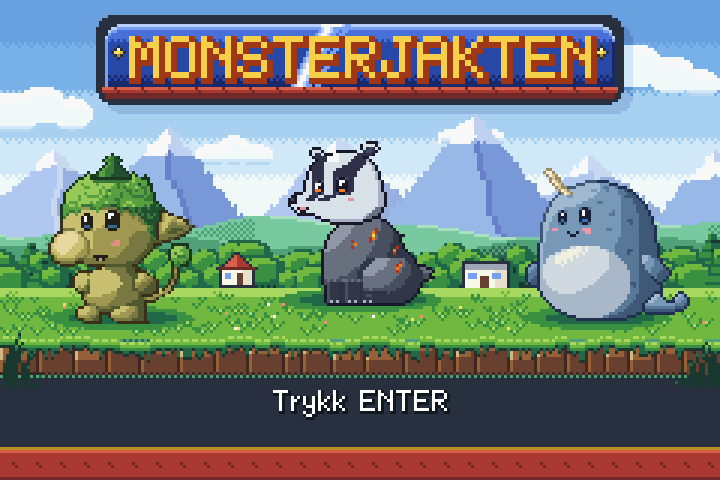
De 9 stegene
- 1Kart og rutebevegelse – I dag lager du et kart med gress, sti, vann, busker og steiner, og en helt som går rundt én rute om gangen – akkurat som i de gamle Game Boy-spillene.
- 2Animasjon, by og sti – I dag får du en liten by der husene er bygget av fliser, og en sti med trær og høyt gress.
- 3Hus med innside – I dag kan du gå inn i husene! Hjemme, laben og hvilehuset har hvert sitt kart for innsiden.
- 4Folk og tekstbokser – I dag får byen, husene og stien innbyggere.
- 5Høyt gress og møter – I dag får det høye gresset liv: det skjuler føttene til helten, og plutselig hopper et vilt monster fram.
- 6Turbasert kamp – I dag blir det ekte monsterkamp: en meny med pil (ANGRIP, SEKK, MONSTRE, FLYKT), angrep der terningen bestemmer skaden, og en motstander som slår tilbake.
- 7HP-stolper, typer og effekter – I dag får kampen liv: HP-stolper som krymper og skifter farge, typer som er sterke mot hverandre (ild slår gress, vann slår ild ...), effekter og lyd for hvert angrep, og en ordentlig slutt: vinne eller tape.
- 8Fange monstre og laget – I dag får du fangstlykter! Kast en lykt på et vilt monster, se den vugge, og håp at monsteret blir i lykta.
- 9Nivå, hvilehus og ferdigstilling – I dag gjør du spillet ferdig: en tittelskjerm, tre fangstlykter på bordet i laben der du velger ditt første monster, erfaring og nivå etter hver seier, verten i hvilehuset som gjør laget friskt, og en pausemeny som START-menyen i de gamle Game Boy-spillene.
Kart og rutebevegelse
I dag lager du et kart med gress, sti, vann, busker og steiner, og en helt som går rundt én rute om gangen – akkurat som i de gamle Game Boy-spillene.
Kom i gang
Åpne steg1.py og kjør den. Du ser kartet, men helten står oppe i hjørnet (oppå en busk!) og kan ikke gå. Det fikser du nå.
Fil: steg1.py
Teori til dette steget: 1. Hvordan et program kjører · 2. Variabler og regning · 3. Koordinater og skjermen · 5. Valg: if, elif og else · 6. Spill-løkka, taster og tellere · 8. Lokale og globale variabler · 9. Lister · 12. Figurer, objekter og kollisjon
Nytt i dag
- spill-løkka:
oppdater()kjøres 60 ganger i sekundet - koordinater: x er piksler bortover, y er piksler nedover
- ruter: 15 × 10 ruter à 16 × 16 piksler (
RUTE = 16) - kartet som en liste med tekst, og
tegn_kart() rute_ved(x, y): hvilket tegn ligger på et punkt?global: når en funksjon skal endre en variabel utenfor seg selv
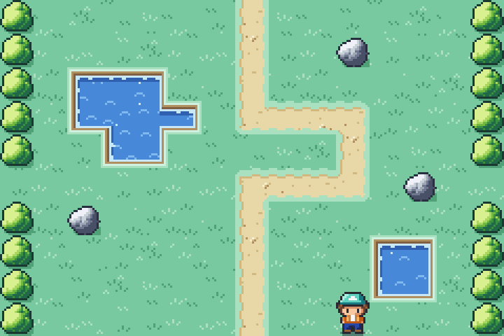
Forklaring av koden
Bla gjennom forklaringen før du begynner, og gå tilbake til den når du står fast.
Den viser koden i steg1.py, hva som skjer på skjermen, og hva programmet husker.
Der det står OPPGAVE, er det du som skal skrive koden.
Åpne forklaringen i stort vindu ↗ · Neste: mellomrom eller → (klikk i forklaringen først)
Oppgavene
I steg1.py står det OPPGAVE og pass der
det mangler kode. Bytt ut pass med din egen kode. Kjør spillet ofte!
1. Plasser helten koordinater
Flytt helten så den starter på stien midt på kartet: kolonne 7, rad 5. x er
kolonne * RUTE, og y errad * RUTE - 8(hodet stikker opp i ruta over).Hint 1
Det er bare tallene inni
Figur(...)som skal endres.Hint 2
helt = Figur("helt_ned_1", 7 * RUTE, 5 * RUTE - 8, skygge=True)2. Få helten til å gli spill-løkka
Når helten er midt i et steg (
steg_igjen > 0), skal den flytte seg én piksel:dxbortover ogdynedover. Tell såsteg_igjenned med 1. Etter 16 bilder har helten gått en hel rute. Prøv høyre piltast!Hint 1
Du endrer
helt.x,helt.yogsteg_igjen– tre linjer.Hint 2
helt.x = helt.x + dx– gjør det samme med y og dy, og trekk 1 frasteg_igjen.3. Alle fire retninger if / elif
Høyre er gjort for deg. Legg til venstre, opp og ned med
elif. Venstre erdx = -1, opp erdy = -1og ned erdy = 1.Hint 1
Bruk
elif tast_holdes("venstre"):rett under høyre-delen.Hint 2
Hvorfor elif og ikke if? Prøv å holde to piltaster samtidig med if – da går helten på skrå!
4. Hindringer in og lister
I
kan_ga_til(): hvisruteer en avHINDRINGER(vann, busk, stein), skal funksjonen giFalse. Da kan ikke helten gå dit.Hint 1
insjekker om noe finnes i en liste.Hint 2
if rute in HINDRINGER:og såreturn Falsepå neste linje (med innrykk).5. Ikke ut av skjermen None
Gå ut der stien slutter nederst – helten forsvinner! Utenfor kartet gir
rute_ved()verdienNone. GiFalsenårruteerNone.Hint 1
Det ligner veldig på oppgave 4.
Hint 2
if rute == None:ogreturn False.6. Bump! else
Når noe er i veien, skal lyden
"bump"spilles, og helten skal trampe på stedet i ett steg: settdxogdytil 0 ogsteg_igjentilRUTE. Hvorfor ikke bare spille lyden? Prøv – den spilles 60 ganger i sekundet!Hint 1
Skriv koden i
else:-delen nederst ioppdater().Hint 2
spill_lyd("bump"), sådx = 0,dy = 0ogsteg_igjen = RUTE.
Ekstra utfordringer
For deg som blir ferdig tidlig. Her er det ingen hull i koden – du bestemmer selv hvordan.
A. Ditt eget kart
Endre
KART: lag en ny dam, en sti som svinger, eller en labyrint av busker. Husk at hver linje må ha nøyaktig 15 tegn. Prøv også"gress_blomst"som et nytt tegn iRUTER.Vis hint
Et nytt tegn, f.eks.
"*": "gress_blomst", må stå iRUTER, ellers får du en feilmelding.B. Løpesko
Når shift holdes nede, skal helten gå 2 piksler per bilde i stedet for 1.
Vis hint
16 er delelig med 2, så trekk 2 fra
steg_igjenog flyttdx * 2nårtast_holdes("shift").C. Skritteller
Vis hvor mange skritt helten har gått, med
Tekst(...)øverst i hjørnet.Vis hint
Lag
skritt = 0ogteller = Tekst("0", 4, 4). Øk skritt når et steg starter, og settteller.tekst = str(skritt). Huskglobal.D. Fartsmåler
Spillet skal gå i 60 bilder i sekundet, ellers hakker det. Vis to tall nederst i hjørnet:
bilder_per_sekund()(hvor mange bilder spillet klarer) ogtregeste_bilde()(hvor mange millisekunder det tregeste av de siste 60 bildene tok). Over 17 ms betyr at et bilde gikk tapt, og over 25 ms merker du et hakk. Bruk måleren i de andre ytelsesoppgavene!Hint 1
Lag teksten utenfor funksjonene:
maaler = Tekst("", 4, 150, farge="white", skygge="#181820").Hint 2
En tekst som endres, må tegnes på nytt – det koster også! Oppdater den derfor bare hvert 30. bilde:
if int(tid() * 60) % 30 == 0:ogmaaler.tekst = f"{bilder_per_sekund()} b/s {tregeste_bilde()} ms".Hint 3
Gå rundt og se hvor tallene endrer seg. Hva skjer når du skifter rom?
Animasjon, by og sti
I dag får du en liten by der husene er bygget av fliser, og en sti med trær og høyt gress. Helten går mellom byen og stien, ser i riktig retning og beveger beina når den går.
Kom i gang
Åpne steg2.py og kjør. Nå er det en by! Men hvilehuset mangler, helten skøyter rundt uten å bevege beina, og veien opp går bare én vei.
Fil: steg2.py
Teori til dette steget: 3. Koordinater og skjermen · 4. Tekst og f-strenger · 5. Valg: if, elif og else · 6. Spill-løkka, taster og tellere
Nytt i dag
retningsom tekst: "opp", "ned", "venstre", "hoyre"- bildenavn som settes sammen:
"helt_" + retning + "_1" - animasjon med
figur.animer([...], fart=8) - hus og trær av fliser: flere ruter som sammen blir én ting
- flere kart, og
overgang(funksjon): skjermen toner ut og inn
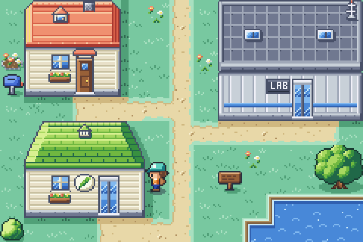
Forklaring av koden
Bla gjennom forklaringen før du begynner, og gå tilbake til den når du står fast.
Den viser koden i steg2.py, hva som skjer på skjermen, og hva programmet husker.
Der det står OPPGAVE, er det du som skal skrive koden.
Åpne forklaringen i stort vindu ↗ · Neste: mellomrom eller → (klikk i forklaringen først)
Oppgavene
I steg2.py står det OPPGAVE og pass der
det mangler kode. Bytt ut pass med din egen kode. Kjør spillet ofte!
1. Bygg hvilehuset fliser i kartet
Husene er bygget av fliser: hver rute er en liten bit av taket eller veggen. Bygg hvilehuset i
KART_BYEN, i kolonne 1–5 og rad 5–8. Flisene står i HUSBYGGESETTET underRUTER_UTE:"QWWWE","ZXXXC","(I+o)"og"<#-O>".Hint 1
Bytt ut punktum nr. 2–6 i hver av de fire radene. Det første punktumet (kolonne 0) skal stå igjen.
Hint 2
Den første raden blir
".QWWWE.=======.". Tell at hver rad har 15 tegn.2. Musikk på stien funksjonskall
I
bygg_stien(): spill musikken"sti".Hint 1
Se hvordan
bygg_byen()gjør det.Hint 2
spill_musikk("sti")3. Tilbake til byen funksjoner
Skriv ferdig
gaa_til_byen(): bygg byen, og sett helten i rad 1 (øverst i byen). x skal være den samme som før.Hint 1
Se på
gaa_til_stien()rett over – den gjør det samme, bare omvendt.Hint 2
bygg_byen()oghelt.y = 1 * RUTE - 84. v-rutene elif
I
ferdig_med_steg(): står helten på en"v"-rute (nederst på stien), skalovergang(gaa_til_byen)kjøres. Legg merke til at det er uten parenteser bak funksjonsnavnet.Hint 1
Lag en
elifunderif rute == "^":.Hint 2
elif rute == "v":ogovergang(gaa_til_byen)5. Stå i riktig retning tekst + tekst
Når ingen piltast holdes: stopp animasjonen med
helt.animer(None), og vis bildet der helten står stille og ser i riktig retning, f.eks."helt_opp_1".Hint 1
Bildenavnet kan settes sammen av tre biter:
"helt_",retningog"_1".Hint 2
helt.bilde = "helt_" + retning + "_1"6. Gå med beina animasjon
Når helten går: start gang-animasjonen med de fire bildene
"helt_" + retning + "_2","_3","_4"og"_1", medfart=8. 4 bilder × 8 = 32 bilder = to steg.Hint 1
helt.animer([...], fart=8)– lista har fire bildenavn.Hint 2
Det første er
"helt_" + retning + "_2". Lag de tre andre på samme måte.
Ekstra utfordringer
For deg som blir ferdig tidlig. Her er det ingen hull i koden – du bestemmer selv hvordan.
A. Flere trær
Plant flere trær i byen eller på stien. Et tre er fire fliser:
{}på én rad og[]på raden under.Vis hint
Husk at hver kartlinje fortsatt må ha 15 tegn, og at treet trenger to rader.
B. Et tredje kart
Lag et nytt kart (f.eks. en strand med
"sand") som du kommer til fra et annet sted på stien.Vis hint
Du trenger
KART_STRANDA,bygg_stranda(),gaa_til_stranda()og et nytt tegn for veien dit.C. Et hus til
Bygg et hus til i byen med det blå taket (
tak_bla_ov,tak_bla_o... se Byggesett-fanen).Hint 1
Gi flisene nye tegn i
RUTER_UTE(f.eks. bokstaver du ikke har brukt), og legg dem iHINDRINGER.Hint 2
Skal huset kaste skygge på gresset, legger du de nye tegnene i
HUSTEGNogså.
Hus med innside
I dag kan du gå inn i husene! Hjemme, laben og hvilehuset har hvert sitt kart for innsiden. Nå har spillet fem kart, så vi samler alt om kartene i én ordbok – KARTENE – og alle dørene i en tabell – DORER.
Kom i gang
Åpne steg3.py og les KARTENE og DORER øverst. Kjør: byen ser ut som før, men dørene virker ikke ennå. Gjør oppgavene i rekkefølge (søk etter «OPPGAVE 1» osv.) – 5 og 6 står øverst i fila.
Fil: steg3.py
Teori til dette steget: 2. Variabler og regning · 3. Koordinater og skjermen · 7. Funksjoner · 10. Løkker: for · 11. Ordbøker (dictionaries)
Nytt i dag
- en ordbok med ordbøker:
KARTENE["laben"]["musikk"]gir"lab" - én funksjon for alle kartene:
bygg_kart(navn) - en dørtabell: en liste med ordbøker som sier hvor hver dør fører
- en for-løkke som leter i en liste og gir (
return) det den finner - samme tegn kan bety forskjellige ting:
"."er gress ute og gulv inne //: deling som runder ned –helt.x // RUTEer kolonnen
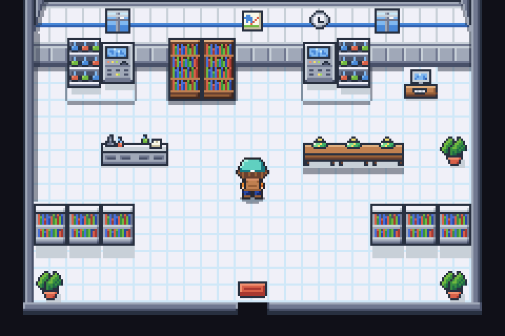
Forklaring av koden
Bla gjennom forklaringen før du begynner, og gå tilbake til den når du står fast.
Den viser koden i steg3.py, hva som skjer på skjermen, og hva programmet husker.
Der det står OPPGAVE, er det du som skal skrive koden.
Åpne forklaringen i stort vindu ↗ · Neste: mellomrom eller → (klikk i forklaringen først)
Oppgavene
I steg3.py står det OPPGAVE og pass der
det mangler kode. Bytt ut pass med din egen kode. Kjør spillet ofte!
1. Ett kart, én funksjon ordbok i ordbok
I
bygg_kart(navn): slå opp kartet medinfo = KARTENE[navn]. Tegn det medtegn_kart(info["kart"], info["ruter"], info["kanter"]), og spill musikkeninfo["musikk"]. Slett den midlertidige linja. Test: ta bort#foranbygg_kart("hjemme")nederst i fila – da starter spillet hjemme.Hint 1
infoblir en ordbok med fem ting: kart, ruter, kanter, hindringer og musikk.Hint 2
spill_musikk(info["musikk"])2. Finn døra for-løkke og return
Skriv
dor_ved(kolonne, rad): gå gjennom alle dørene iDORER. Erdor["fra"]liksted, ogdor["kolonne"]ogdor["rad"]likkolonneograd, skal funksjonen gi døra.Hint 1
for dor in DORER:og så enifmed toandinni.Hint 2
if dor["fra"] == sted and dor["kolonne"] == kolonne and dor["rad"] == rad:ogreturn dor3. Gå gjennom døra ordbok-oppslag
Skriv
gaa_gjennom(): bygg kartet døra fører til (neste_dor["til"]), og sett helten på ruta (neste_dor["til_kolonne"],neste_dor["til_rad"]). Gå inn hjemme (huset med rødt tak)!Hint 1
bygg_kart(neste_dor["til"])Hint 2
helt.x = neste_dor["til_kolonne"] * RUTEoghelt.y = neste_dor["til_rad"] * RUTE - 84. Hindringer for hvert kart samme tegn, ny betydning
Inne kan helten gå ut i det svarte mørket! Det er fordi
Xikke er en hindring ute. Ikan_ga_til(): bruk hindringene til kartet vi er på,KARTENE[sted]["hindringer"], i stedet forHINDRINGER_UTE.Hint 1
Bare én ting i
if-linja skal byttes.Hint 2
if rute in KARTENE[sted]["hindringer"]:5. Laben i KARTENE ny nøkkel i ordboka
Legg til laben i
KARTENE: kartetKART_LABEN,RUTER_LABEN,KANTER_INNE,HINDRINGER_INNEog musikken"lab". Se på"hjemme"rett over.Hint 1
Kopier linjene til
"hjemme"og bytt ut det som er annerledes.Hint 2
Husk kommaet på slutten:
... "musikk": "lab"},6. Dørene til laben ordbøker i en liste
Lag to nye dører i
DORER: døra i byen (kolonne 12, rad 4) fører til laben (kolonne 7, rad 7), og dørmatta i laben (kolonne 7, rad 8) fører ut til ruta foran døra (kolonne 12, rad 5). Gå inn i laben!Hint 1
Se på dørene til hvilehuset – oppsettet er det samme.
Hint 2
{"fra": "byen", "kolonne": 12, "rad": 4, "til": "laben", "til_kolonne": 7, "til_rad": 7},
Ekstra utfordringer
For deg som blir ferdig tidlig. Her er det ingen hull i koden – du bestemmer selv hvordan.
A. Et eget hus
Bygg et nytt hus i byen (f.eks. med blått tak), lag et kart for innsiden, og koble dem sammen med to dører i DORER.
Hint 1
Du trenger: fliser i
KART_BYEN, et nytt kart (kopierKART_HJEMME), en ny linje iKARTENEog to dører – inn og ut.Hint 2
Nye husfliser bør også stå i
HUSTEGN(da får huset skygge). Nye møbeltegn inne skal også stå iROMTEGN, ellers blir det et svart hull i veggen ved siden av dem.B. Pynt hjemme
Flytt møblene, lag et større teppe eller sett inn en seng (
seng_ooverseng_n).Hint 1
Nye tegn må stå i
RUTER_HJEMME, og møbler må stå iHINDRINGER_INNE.Hint 2
Lager du et nytt tegn i rommet, legg det i
ROMTEGNogså. Ellers blir det et svart hull i veggen der møbelet står inntil kanten.C. Trappa
Trappa hjemme fører ingen steder. Lag et loft (
KART_LOFTET) og en dør fra trappa dit.Hint 1
Trappa (
t) er en hindring. Ta den ut av hindringene, og lag en dør i DORER fra ruta der trappa står.Hint 2
Bruker loftet nye tegn, må de stå i
ROMTEGNogså. Ellers blir det et svart hull i veggen ved siden av dem.
Folk og tekstbokser
I dag får byen, husene og stien innbyggere. Gå bort til en person, se mot personen og trykk MELLOMROM, så sier personen noe i en tekstboks – og snur seg mot deg.
Kom i gang
Åpne steg4.py og kjør. Skiltene i byen og på stien kan allerede leses (gå bort til et og trykk mellomrom), men folkene er usynlige og stumme. Les lista folk øverst i koden først.
Fil: steg4.py
Teori til dette steget: 4. Tekst og f-strenger · 6. Spill-løkka, taster og tellere · 7. Funksjoner · 9. Lister · 10. Løkker: for · 11. Ordbøker (dictionaries) · 12. Figurer, objekter og kollisjon · 14. Tilfeldighet og sannsynlighet
Nytt i dag
- en liste med dictionaries: hver person er en dictionary
person["figur"]: en figur kan lagres i en dictionary- en funksjon som gir to verdier:
x, y = ruta_foran() tast_trykket(): bare i det øyeblikket tasten trykkes- tekstboks som vises og skjules med
.synlig pop(0): ta ut det første i en liste
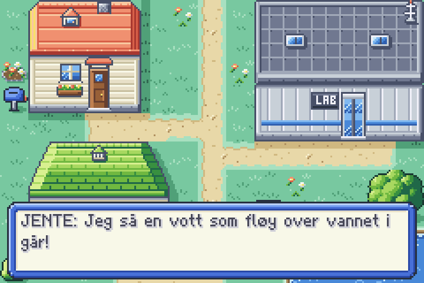
Forklaring av koden
Bla gjennom forklaringen før du begynner, og gå tilbake til den når du står fast.
Den viser koden i steg4.py, hva som skjer på skjermen, og hva programmet husker.
Der det står OPPGAVE, er det du som skal skrive koden.
Åpne forklaringen i stort vindu ↗ · Neste: mellomrom eller → (klikk i forklaringen først)
Oppgavene
I steg4.py står det OPPGAVE og pass der
det mangler kode. Bytt ut pass med din egen kode. Kjør spillet ofte!
1. En ny person dictionary
Legg til en jente i byen: kolonne 10, rad 8, som ser mot høyre (mot vannet). Bruk
folk.append({...}), og finn på hva hun sier (en liste med replikker).Hint 1
Kopier en av personene i lista
folkog endre verdiene.Hint 2
folk.append({"bilde": "jente", "kart": "byen", "kolonne": 10, "rad": 8, "retning": "hoyre", "replikker": ["JENTE: Hei!"]})2. Folkene blir synlige figur i dictionary
I
lag_folk(): lag en figur for personen. Bildet er f.eks."mor_ned", og personen står i ruta (kolonne, rad) – akkurat som helten (husk- 8). Legg figuren iperson["figur"]og i listating.Hint 1
Bildenavnet er
person["bilde"] + "_" + person["retning"].Hint 2
figur = Figur(bildenavn, person["kolonne"] * RUTE, person["rad"] * RUTE - 8, skygge=True), såperson["figur"] = figurogting.append(figur).3. Hvem står der? for-løkke og return
Skriv
person_ved(x, y): gå gjennom alle ifolk. Er personen på dette kartet (sted), ogperson["kolonne"] * RUTEerxogperson["rad"] * RUTE - 8ery, skal funksjonen gi personen. Nå kan du ikke gå gjennom folk lenger.Hint 1
for person in folk:og så enifmedandinni.Hint 2
if person["kart"] == sted and person["kolonne"] * RUTE == x and person["rad"] * RUTE - 8 == y:ogreturn person.4. Tekstboksen if / else og lister
I
neste_replikk(): er det flere replikker igjen isamtale, skal den første vises medvis_tekst(samtale.pop(0))og lyden"tekst_pip"spilles. Ellers skal tekstboksen skjules (skjul_tekst()) ogpraterbliFalse. Test med skiltet på stien.Hint 1
if len(samtale) > 0:...else:...Hint 2
pratermå stå iglobal-linja – det gjør den allerede.5. Snakk med folk None
I
snakk(): står det en person foran helten (personer ikkeNone)? Start en samtale med replikkene til personen.Hint 1
Se hvordan skiltet gjøres litt over.
Hint 2
if person != None:ogsi(person["replikker"])6. Se på meg når jeg snakker! dictionary som oppslag
Personen skal snu seg mot helten. Bytt bildet til
person["figur"]. BrukMOTSATT: ser helten"opp", må personen se"ned".Hint 1
MOTSATT[retning]gir retningen personen skal se.Hint 2
person["figur"].bilde = person["bilde"] + "_" + MOTSATT[retning]
Ekstra utfordringer
For deg som blir ferdig tidlig. Her er det ingen hull i koden – du bestemmer selv hvordan.
A. Skrivemaskin-tekst
La teksten komme fram bokstav for bokstav, som i Pokémon.
Vis hint
Lagre hele replikken i en variabel, og vis
hel_tekst[:antall]derantalløker med 1 hvert bilde ioppdater().B. Nytt hver gang
La en person si noe annet andre gang du snakker med den.
Vis hint
Legg til en nøkkel som
"snakket": Falsei dictionaryen, og sjekk/endre den isnakk().C. Bøker hjemme
Står helten foran bokhylla hjemme og trykker mellomrom, skal det stå «Bøker om monstre. Spennende!».
Vis hint
Bokhylla er
Kogki KART_HJEMME. Isnakk():if sted == "hjemme" and rute_under_fotene(x, y) in ["K", "k"]:ogsi([...]).D. Skrivemaskin uten hakk
Har du laget skrivemaskin-teksten (A)? Slå på fartsmåleren (ekstra 1D) og snakk med noen. Hver gang teksten endres, må motoren lage et nytt bilde av HELE teksten – også bokstavene som allerede står der. Få spillet til å holde 60 bilder i sekundet mens teksten skrives.
Hint 1
Endre teksten bare hvert 3. bilde, og vis to bokstaver om gangen. Da går det like fort, men motoren må lage teksten seks ganger sjeldnere.
Hint 2
Utfordring: lag én
Tekstper ord i stedet for én for hele replikken. Da lages bare det nye ordet. Brukord_tekst.breddefor å finne hvor neste ord skal stå, og husk åfjern()alle ordene når replikken er ferdig – ellers ligger de igjen.
Høyt gress og møter
I dag får det høye gresset liv: det skjuler føttene til helten, og plutselig hopper et vilt monster fram. Skjermen blinker, og du havner på kampskjermen.
Kom i gang
Åpne steg5.py og kjør. Gå opp til stien og inn i det høye gresset. Ingenting skjer ennå – kampskjermen er laget, men den er skjult. Oppgave 1–3 gir møter, 4–6 gir kampskjermen.
Fil: steg5.py
Teori til dette steget: 5. Valg: if, elif og else · 8. Lokale og globale variabler · 13. Tilstand: spillet husker hva som skjer · 14. Tilfeldighet og sannsynlighet
Nytt i dag
random: tilfeldige møter- en tilstandsvariabel:
modus = "kart"ellermodus = "kamp" oppdater()gjør forskjellige ting etter hvamoduserovergang(funksjon, stil="kamp"): blink og svarte striper- lag:
lag=0for bakgrunn,lag=3for bokser og tekst not: det motsatte av True/False
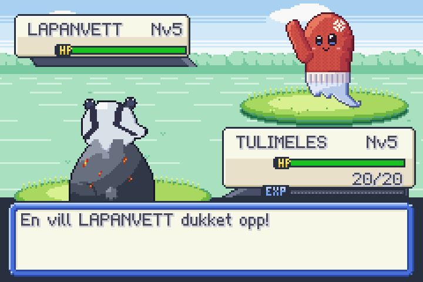
Forklaring av koden
Bla gjennom forklaringen før du begynner, og gå tilbake til den når du står fast.
Den viser koden i steg5.py, hva som skjer på skjermen, og hva programmet husker.
Der det står OPPGAVE, er det du som skal skrive koden.
Åpne forklaringen i stort vindu ↗ · Neste: mellomrom eller → (klikk i forklaringen først)
Oppgavene
I steg5.py står det OPPGAVE og pass der
det mangler kode. Bytt ut pass med din egen kode. Kjør spillet ofte!
1. Gress over føttene figur som overlegg
I
ferdig_med_steg(): står helten i høyt gress ('"')? Flyttgress_overtil føttene (xsom helten,y = helt.y + 16) og gjør den synlig.Hint 1
Tegnet for høyt gress er
"– skriv det som'"'(enkle fnutter rundt).Hint 2
gress_over.x = helt.x,gress_over.y = helt.y + 16oggress_over.synlig = True2. Et vilt monster! random
I høyt gress skal det være 1 sjanse av 8 for å møte et monster. Bruk
random.randint(1, 8)og kallmote().Hint 1
random.randint(1, 8)gir et tall fra 1 til 8. Er det 1, blir det møte.Hint 2
if rute == '"' and random.randint(1, 8) == 1:ogmote()3. Kart eller kamp? tilstandsvariabel
Nederst i
oppdater(): ermodus"kart", skaloppdater_kart()kjøres. Ermodus"kamp", skaloppdater_kamp()kjøres. (Nå går ikke helten videre mens det er kamp.)Hint 1
Bytt ut linja
oppdater_kart()med en if/elif.Hint 2
if modus == "kart":...elif modus == "kamp":...4. Vis kampskjermen for-løkke og .synlig
I
vis_kampskjerm(synlig): gå gjennom alle figurene ikamptingog sett.synligtilsynlig. Gå så gjennomtingog sett.synligtil det motsatte (not synlig). Helten skal også fånot synlig.Hint 1
To for-løkker og én linje for helten.
Hint 2
for figur in kampting:ogfigur.synlig = synlig5. Monstrene på plass koordinater
Øverst under KAMPSKJERMEN: monstrene står i hjørnet. Sett motstanderen (bildet sett forfra) på
x=152, y=0og ditt eget monster (sett bakfra) påx=32, y=50.Vis hint
Bare tallene i de to
Figur(...)-linjene skal endres.6. Hvem hoppet fram? random.choice
I
start_kamp(): velg et tilfeldig monster fraVILLE_MONSTREog et tilfeldig nivå fra 2 til 5. Bytt bildet tilmotstander_figur(f.eks."tanngris_foran"), skriv navnet og nivået ("Nv3") i infoboksen, og vis teksten «En vill TANNGRIS dukket opp!».Hint 1
art = random.choice(VILLE_MONSTRE)ognivaa = random.randint(2, 5). Navnet finner du iARTER[art]["navn"].Hint 2
navn_motstander.tekst = ARTER[art]["navn"]ognivaa_motstander.tekst = "Nv" + str(nivaa)
Ekstra utfordringer
For deg som blir ferdig tidlig. Her er det ingen hull i koden – du bestemmer selv hvordan.
A. Sjeldne monstre
Gjør LAPANVETT sjeldnere og KVISTULUS vanligere.
Vis hint
Et monster som står flere ganger i
VILLE_MONSTRE, blir valgt oftere.B. Raslende gress
La det komme en liten effekt når helten går inn i gresset.
Vis hint
effekt("blader", helt.midt_x, helt.y + 20)iferdig_med_steg().C. Ingen møter rett etter en kamp
La helten få gå 5 steg i fred etter en kamp.
Vis hint
Lag en variabel
fredelige_steg. Sett den til 5 itilbake_til_kartet(), og tell ned iferdig_med_steg().
Turbasert kamp
I dag blir det ekte monsterkamp: en meny med pil (ANGRIP, SEKK, MONSTRE, FLYKT), angrep der terningen bestemmer skaden, og en motstander som slår tilbake. Dere bytter på – én tur hver.
Kom i gang
Åpne steg6.py, les ARTER og lag_monster() øverst, og kjør. Finn et vilt monster i gresset. Menyen kommer fram, men pila sitter fast og ingenting skjer når du trykker.
Fil: steg6.py
Teori til dette steget: 6. Spill-løkka, taster og tellere · 7. Funksjoner · 11. Ordbøker (dictionaries) · 13. Tilstand: spillet husker hva som skjer · 14. Tilfeldighet og sannsynlighet
Nytt i dag
- monstre som dictionaries:
egen["liv"],motstander["navn"]– somfienderi teksteventyret lag_monster(art, nivaa): en funksjon som lager og gir tilbake en dictionaryterning()fra teksteventyret- en meny styrt av en variabel (
valg= 0, 1, 2 eller 3) - lister med koordinater:
MENY_X[valg] etter(sekunder, funksjon): turene skjer etter hverandrekampfase: hva kampen venter på ("meny" eller "venter")
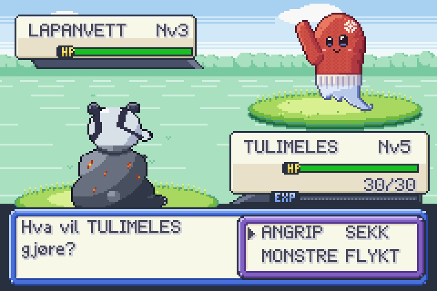
Forklaring av koden
Bla gjennom forklaringen før du begynner, og gå tilbake til den når du står fast.
Den viser koden i steg6.py, hva som skjer på skjermen, og hva programmet husker.
Der det står OPPGAVE, er det du som skal skrive koden.
Åpne forklaringen i stort vindu ↗ · Neste: mellomrom eller → (klikk i forklaringen først)
Oppgavene
I steg6.py står det OPPGAVE og pass der
det mangler kode. Bytt ut pass med din egen kode. Kjør spillet ofte!
1. Pila lister med koordinater
I
styr_menyen(): flytt pila dit valget er. Pila skal stå 8 piksler til venstre for teksten og 1 piksel lenger ned. BrukMENY_X[valg]ogMENY_Y[valg].Hint 1
MENY_X[0]er x for ANGRIP,MENY_X[3]er x for FLYKT.Hint 2
pil.x = MENY_X[valg] - 8ogpil.y = MENY_Y[valg] + 12. Flytt valget and / or
Høyre er gjort for deg. Lag venstre (går fra 1 eller 3), ned (fra 0 eller 1) og opp (fra 2 eller 3). Spill
"meny_pip"hver gang.Hint 1
Tegn menyen: 0 ANGRIP, 1 SEKK på øverste linje, 2 MONSTRE, 3 FLYKT under. Ned er + 2, opp er − 2.
Hint 2
elif tast_trykket("venstre") and (valg == 1 or valg == 3):ogvalg = valg - 13. Velg! if / elif / else
Når spilleren trykker mellomrom: spill
"velg"og kallskjul_meny(). Er valget 0 (ANGRIP), kallspiller_angriper(). Er valget 3 (FLYKT), kallflykt(). Ellers: vis «Det kan du ikke ennå!» ogetter(1.5, vis_meny).Hint 1
Alt skjer inni
if tast_trykket("mellomrom"):.Hint 2
etter(1.5, vis_meny)– uten parenteser bakvis_meny!4. Flykt etter()
Skriv
flykt(): vis «Du kom deg unna!», spill"flykt", og avslutt kampen om 1,5 sekunder medetter(1.5, slutt_kamp). Slett den midlertidige linja.Vis hint
Tre linjer:
vis_tekst(...),spill_lyd(...)ogetter(...).5. Angrip! terning og dictionary
Skriv starten av
spiller_angriper(): skaden erterning(1, 4) + egen["styrke"]. Trekk den framotstander["liv"](men ikke under 0). Vis f.eks. «TULIMELES brukte GLØDKLO!», spill"angrep_normal", vis skaden medflytende_tekst("-7", x, y)over motstanderen, og kalloppdater_infobokser().Hint 1
Akkurat som når du slo trollet i teksteventyret:
skade = terning(...)ogliv = liv - skade.Hint 2
Teksten:
egen["navn"] + " brukte " + egen["angrep"] + "!". Skaden:flytende_tekst("-" + str(skade), motstander_figur.midt_x, motstander_figur.midt_y - 12)6. Motstanderen svarer gjenbruk
Skriv starten av
motstander_svarer(): det samme som i oppgave 5, men omvendt – motstanderen slår, ogegen["liv"]blir mindre. Vis f.eks. «Den ville TANNGRIS brukte LYNSTANG!».Hint 1
Kopier koden fra oppgave 5 og bytt
egenogmotstander(og figurene).Hint 2
Nederst i funksjonen er det bestemt hva som skjer etterpå – det trenger du ikke skrive.
Ekstra utfordringer
For deg som blir ferdig tidlig. Her er det ingen hull i koden – du bestemmer selv hvordan.
A. Flykt kan mislykkes
La det være 1 sjanse av 4 for at du ikke kommer unna. Da er det motstanderens tur.
Vis hint
if terning(1, 4) == 1:vis «Du kom deg ikke unna!» ogetter(1.5, motstander_svarer).B. Kritisk treff
Av og til (1 av 10) gjør angrepet dobbel skade, og teksten sier «Et kritisk treff!».
Vis hint
Gang skaden med 2 hvis
terning(1, 10) == 1.C. Nytt monster
Endre verdiene i
ARTERslik at kampene blir lettere eller vanskeligere. Hva skjer hvis LEPULVIS har styrke 6?Vis hint
Bare endre tallene. Kjør og prøv!
HP-stolper, typer og effekter
I dag får kampen liv: HP-stolper som krymper og skifter farge, typer som er sterke mot hverandre (ild slår gress, vann slår ild ...), effekter og lyd for hvert angrep, og en ordentlig slutt: vinne eller tape.
Kom i gang
Åpne steg7.py. Legg merke til at spiller_angriper() og motstander_svarer() nå bruker den nye funksjonen angrip() – vi har ryddet. Kjør og slåss: stolpene hopper, er alltid grønne, og alle angrep ser like ut.
Fil: steg7.py
Teori til dette steget: 5. Valg: if, elif og else · 6. Spill-løkka, taster og tellere · 7. Funksjoner · 11. Ordbøker (dictionaries) · 12. Figurer, objekter og kollisjon
Nytt i dag
- en typetabell: en dictionary der hver verdi er en liste
in:"gress" in ["vann", "stein"]girFalse- én funksjon for begge sider:
angrip(angriper, forsvarer, figur) - noe som skjer litt hver gang i spill-løkka (stolpen glir én piksel per bilde)
effekt(),figur.glimt()ogfigur.rist()
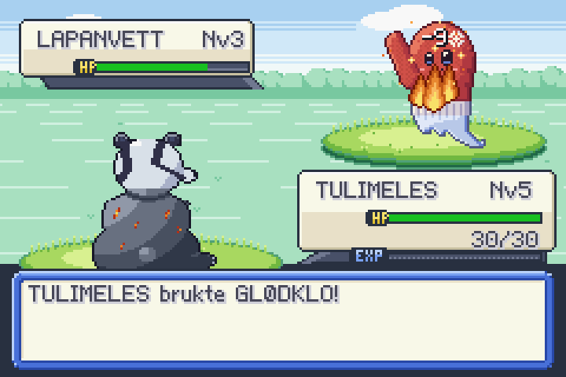
Forklaring av koden
Bla gjennom forklaringen før du begynner, og gå tilbake til den når du står fast.
Den viser koden i steg7.py, hva som skjer på skjermen, og hva programmet husker.
Der det står OPPGAVE, er det du som skal skrive koden.
Åpne forklaringen i stort vindu ↗ · Neste: mellomrom eller → (klikk i forklaringen først)
Oppgavene
I steg7.py står det OPPGAVE og pass der
det mangler kode. Bytt ut pass med din egen kode. Kjør spillet ofte!
1. Fargen på stolpen if / elif / else
Skriv
hp_farge(andel): mer enn halve stolpen (andel > 0.5) girGRONN, mer enn en femdel (andel > 0.2) girGUL, ellersROD.Hint 1
Tre
return-linjer, én i hver del av if/elif/else.Hint 2
if andel > 0.5:ogreturn GRONN2. Stolpen glir spill-løkka
I
oppdater_stolpe(): er stolpen lengre ennstolpe_lengde(monster), skal den bli 1 piksel kortere. Er den kortere, skal den bli 1 piksel lengre. Funksjonen kjøres 60 ganger i sekundet, så stolpen glir.Hint 1
Lagre målet først:
maal = stolpe_lengde(monster).Hint 2
if stolpe.bredde > maal:ogstolpe.bredde = stolpe.bredde - 1, og eneliffor det motsatte.3. Typetabellen dictionary med lister
Fyll inn resten av
STERK_MOT: gress er sterk mot vann og stein, vann mot ild og stein, lyn mot vann, og stein mot ild og lyn. Ild er gjort for deg.Vis hint
Hver verdi er en liste med tekst:
"gress": ["vann", "stein"].4. Supereffektivt! in
Skriv
effektivitet(): stårforsvar_typei listaSTERK_MOT[angrep_type], skal funksjonen gi 2, ellers 1. Kjemp med TULIMELES mot en KVISTULUS (gress) og se!Hint 1
STERK_MOT["ild"]er lista["gress"].Hint 2
if forsvar_type in STERK_MOT[angrep_type]:ogreturn 2, såreturn 1til slutt.5. Effekter og lyd dictionary-oppslag
I
angrip(): vis effekten og spill lyden til typen til angriperen, midt på figuren:effekt(TYPER[angriper["type"]]["effekt"], figur.midt_x, figur.midt_y). Få figuren til å glimte (figur.glimt(0.2)) og riste (figur.rist(0.4, 2)).Hint 1
Lagre
TYPER[angriper["type"]]i en variabel først, f.eks.type_info, så blir linjene kortere.Hint 2
spill_lyd(type_info["lyd"])6. Du tapte – til hvilehuset flere ting i rekkefølge
Skriv
til_hvilehuset(): kalltilbake_til_kartet()ogbygg_kart("hvilehuset"). Sett helten foran skranken (kolonne 7, rad 4) med bildet"helt_opp_1". Giegenfullt liv, spill"helbred", og vis noe medsi([...]), f.eks. «Monsteret ditt er friskt igjen!».Hint 1
Husk
- 8på y, ogglobal retninghvis du endrer retning.Hint 2
egen["liv"] = egen["maks_liv"]
Ekstra utfordringer
For deg som blir ferdig tidlig. Her er det ingen hull i koden – du bestemmer selv hvordan.
A. Ikke særlig effektivt
Lag
SVAK_MOT(f.eks. ild er svak mot vann og stein) som halverer skaden, med teksten «Det var ikke særlig effektivt ...».Vis hint
La
effektivitet()gi 0.5, og brukround()på skaden.B. Monsteret synker
Når et monster besvimer, skal det skli ned og forsvinne i stedet for å bli borte med en gang.
Vis hint
Øk
motstander_figur.ylitt hvert bilde ioppdater_kamp()mens en variabel sier at det synker.C. HP-tallet teller
La HP-tallet (f.eks. 19/30) telle ned sammen med stolpen.
Vis hint
Regn ut tallet fra stolpen:
round(hp_egen.bredde / 64 * egen["maks_liv"]).D. Rolig kampskjerm
Mange angrep rister hele skjermen, og lyn blinker over alt. Da må hele kampskjermen tegnes på nytt i mange bilder. Skru av skjermristingen, og la bare monsteret som blir truffet riste – litt kraftigere. Sammenlign det tregeste bildet i en kamp før og etter.
Hint 1
Øverst i fila:
for navn in EFFEKTER:/EFFEKTER[navn]["rist"] = 0. Lyn-blinket skrur du av medEFFEKTER["lyn"]["blink"] = None.Hint 2
I
angrip(): byttrist_skjerm(0.3, 2)medfigur.rist(0.6, 4).
Fange monstre og laget
I dag får du fangstlykter! Kast en lykt på et vilt monster, se den vugge, og håp at monsteret blir i lykta. Monstrene du fanger, kommer med i laget ditt, og i kampen kan du bytte hvem som kjemper.
Kom i gang
Åpne steg8.py og kjør. Menyvalgene SEKK og MONSTRE er koblet til, men virker ikke ennå. Se på kast_lykt(), flytt_lykt() og lykt_lander() – de er ferdige og viser hvordan lykta flyr i en bue.
Fil: steg8.py
Teori til dette steget: 9. Lister · 10. Løkker: for · 11. Ordbøker (dictionaries) · 14. Tilfeldighet og sannsynlighet
Nytt i dag
- laget er en liste med dictionaries:
laget[0]["navn"] append(): et fanget monster legges til i laget- en dictionary som teller ting:
sekk["fangstlykt"] - en for-løkke med nummer:
for nr in range(len(laget)) - sannsynlighet: jo mindre liv, jo større sjanse
is: er det akkurat det samme monsteret?
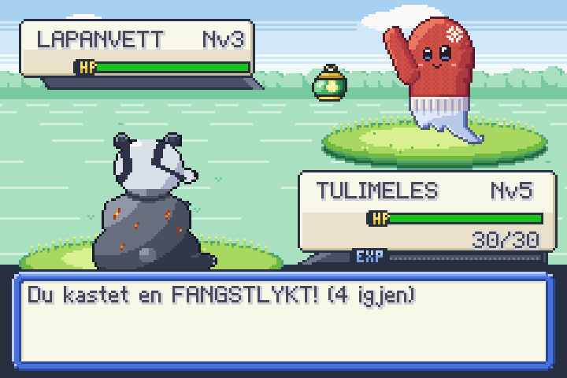
Forklaring av koden
Bla gjennom forklaringen før du begynner, og gå tilbake til den når du står fast.
Den viser koden i steg8.py, hva som skjer på skjermen, og hva programmet husker.
Der det står OPPGAVE, er det du som skal skrive koden.
Åpne forklaringen i stort vindu ↗ · Neste: mellomrom eller → (klikk i forklaringen først)
Oppgavene
I steg8.py står det OPPGAVE og pass der
det mangler kode. Bytt ut pass med din egen kode. Kjør spillet ofte!
1. Sekken dictionary som teller
Skriv
bruk_fangstlykt(): ersekk["fangstlykt"]0, vis «Du har ingen fangstlykter!» og gå tilbake til menyen om 1,5 sekunder. Ellers: trekk 1 frasekk["fangstlykt"]og kallkast_lykt().Hint 1
if sekk["fangstlykt"] == 0:...else:...Hint 2
sekk["fangstlykt"] = sekk["fangstlykt"] - 12. Fangstsjansen sannsynlighet
Skriv
klarte_fangst():andel = liv / maks_liv(1 = fullt liv).sjanse = 100 - round(70 * andel)– fullt liv gir 30, nesten tomt gir nesten 100. Slåterning(1, 100). Er kastet mindre enn eller liksjanse, giTrue.Hint 1
Bruk
motstander["liv"]ogmotstander["maks_liv"].Hint 2
Siste linje kan være
return terning(1, 100) <= sjanse3. Fanget! append
Skriv
fanget(): spill"fanget", vis «Hurra! Du fanget TANNGRIS!», leggmotstandertil ilaget, og avslutt kampen om 2,5 sekunder.Hint 1
laget.append(motstander)Hint 2
etter(2.5, slutt_kamp)4. Lagmenyen range og len
I
vis_lagmeny(): lag ikonet (f.eks."tanngris_ikon") påx=24, og tre tekster 4 piksler lenger ned: navnet påx=46,"Nv3"påx=126og"12/21"(liv/maks_liv) påx=176. Legg alt ilagmeny_ting.Hint 1
lagmeny_ting.append(Figur(monster["art"] + "_ikon", 24, y, lag=3))Hint 2
Tekstene:
Tekst(monster["navn"], 46, y + 4, farge=TEKSTFARGE, skygge=TEKSTSKYGGE). Tall må gjøres om medstr().5. Velg i laget grenser
I
styr_lagmenyen(): opp og ned skal flyttelagvalg, men ikke under 0 eller forbi det siste monsteret (len(laget) - 1). Spill"meny_pip"når valget flytter seg. Pila skal stå påy = 6 + lagvalg * 17 + 5.Hint 1
if tast_trykket("opp") and lagvalg > 0:Hint 2
elif tast_trykket("ned") and lagvalg < len(laget) - 1:6. Bytt monster return
I
bytt_monster(): har det valgte monsteret 0 liv, vis «... har ikke krefter igjen!» ogreturn. Ellers: lukk lagmenyen, laegenblivalgt, bytt bildet tilegen_figur(f.eks."tanngris_bak") og kalloppdater_infobokser(). Slett de midlertidige linjene.Hint 1
egenstår iglobal-linja, så du kan skriveegen = valgt.Hint 2
egen_figur.bilde = egen["art"] + "_bak"7. Ikke gi opp for-løkke og return
Skriv
noen_kan_kjempe(): gå gjennom laget. Har et monster mer enn 0 liv, giTrue. Har ingen liv igjen, giFalse. Nå må du velge et nytt monster når ditt besvimer – du taper bare når alle har besvimt.Hint 1
for monster in laget:ogif monster["liv"] > 0: return TrueHint 2
return Falseskal stå etter løkka, ikke inni den.
Ekstra utfordringer
For deg som blir ferdig tidlig. Her er det ingen hull i koden – du bestemmer selv hvordan.
A. Fullt lag
Laget kan ha maks 6 monstre. Er det fullt, skal monsteret slippes fri igjen med en hyggelig melding.
Vis hint
Sjekk
len(laget) < 6ifanget().B. Laget på kartet
Trykk ENTER på kartet for å se laget ditt (og ESC for å lukke).
Vis hint
Du kan gjenbruke
vis_lagmeny(), men trenger en ny modus, f.eks."lag", så kampen ikke starter.C. Gaver fra folk
La en person på stien gi deg 3 fangstlykter (bare én gang).
Vis hint
Legg til
"gave": 3i dictionaryen til personen, og sjekk/fjern den isnakk().D. Lagmenyen lages én gang
Utfordring! Hver gang du åpner lagmenyen, lages over 30 nye figurer og tekster, og alt kastes når du lukker den. Lag de seks linjene én gang når spillet starter, og la
vis_lagmeny()bare bytte bilder og tekster og gjøre dem synlige. En tekst som ikke har endret seg siden sist, koster ingenting! Mål det tregeste bildet når du åpner menyen.Hint 1
Lag en liste
linjermed seks dictionaries, f.eks.{"felt": Figur("lag_felt", 18, y, lag=3), "ikon": ..., "navn": Tekst(...), "nivaa": ..., "liv": ..., "stav": Rektangel(...)}, og sett alt tilsynlig = False.Hint 2
I
vis_lagmeny(): for linje nummernrsom har et monster, sett.bilde,.tekst,.bredde,.fargeogsynlig = True. Linjer uten monster skal være usynlige.Hint 3
lukk_lagmeny()gjør alt usynlig i stedet for å kallefjern().
Nivå, hvilehus og ferdigstilling
I dag gjør du spillet ferdig: en tittelskjerm, tre fangstlykter på bordet i laben der du velger ditt første monster, erfaring og nivå etter hver seier, verten i hvilehuset som gjør laget friskt, og en pausemeny som START-menyen i de gamle Game Boy-spillene. Til slutt gjør du spillet til ditt eget!
Kom i gang
Åpne steg9.py og kjør. Det starter med en tittelskjerm (trykk ENTER), og du våkner hjemme. Laget er tomt – gå til laben og se på fangstlyktene på bordet. Uten monster tør du ikke gå ut på stien.
Fil: steg9.py
Teori til dette steget: 4. Tekst og f-strenger · 11. Ordbøker (dictionaries) · 13. Tilstand: spillet husker hva som skjer · 15. Filer, feilmeldinger og feilsøking
Nytt i dag
- tittelskjerm og flere moduser:
"tittel","kart","startvalg","kamp" Tekst(..., storrelse=2)og midtstilling medtekst.bredde- erfaring og nivå: tall i en dictionary som vokser
- ting i kartet som kan brukes: sjekk tegnet i ruta foran helten (
in ["(", "o", ")"]) - pausemeny:
modus = "pause",pause(True)og%som får pila til å gå rundt - et åpent steg der du bestemmer selv
Forklaring av koden
Bla gjennom forklaringen før du begynner, og gå tilbake til den når du står fast.
Den viser koden i steg9.py, hva som skjer på skjermen, og hva programmet husker.
Der det står OPPGAVE, er det du som skal skrive koden.
Åpne forklaringen i stort vindu ↗ · Neste: mellomrom eller → (klikk i forklaringen først)
Oppgavene
I steg9.py står det OPPGAVE og pass der
det mangler kode. Bytt ut pass med din egen kode. Kjør spillet ofte!
1. Tittelen storrelse og midtstilling
Lag tittelen «MONSTERJAKTEN» med dobbelt så store bokstaver (
storrelse=2),y = 12, og midtstill den:x = (240 - tittel.bredde) / 2.Hint 1
Legg til
storrelse=2iTekst(...), og endre y til 12.Hint 2
Midtstillingen må komme på en egen linje etter at teksten er laget – først da vet vi hvor bred den er.
2. Ditt første monster append og indeks
I
velg_startmonster(art): lag et monster av arten på nivå 5 (lag_monster), legg det til ilaget, og laegenbli det første monsteret i laget (laget[0]).Hint 1
laget.append(lag_monster(art, 5))Hint 2
egen = laget[0]–egenstår allerede iglobal-linja.3. Helbred laget for-løkke
Skriv
helbred_laget(): gå gjennom alle monstrene i laget og gi dem fullt liv (liv = maks_liv). Spill lyden"helbred"(én gang, etter løkka).Hint 1
for monster in laget:Hint 2
monster["liv"] = monster["maks_liv"]4. Fangstlyktene på bordet and og in
I
snakk(): står helten foran lyktebordet i laben (steder"laben", og ruta foran er"(","o"eller")")? Er laget tomt, kjørvis_startvalg(). Ellers:si(["Bordet er tomt. Du har allerede et monster!"]).Hint 1
if sted == "laben" and rute_under_fotene(x, y) in ["(", "o", ")"]:Hint 2
Inni:
if len(laget) == 0:...else:...5. Nivå opp! dictionary som vokser
I
sjekk_nivaa(): for å gå opp et nivå trenger monsteretnivaa * 10erfaring. Haregennok? Trekk fra det det kostet, øknivaamed 1,maks_livoglivmed 3 ogstyrkemed 1. Kalloppdater_infobokser(), spill"nivaa_opp", vis «TULIMELES gikk opp til nivå 6!», avslutt kampen om 2,5 sekunder ogreturn.Hint 1
if egen["erfaring"] >= egen["nivaa"] * 10:– og alt det andre med innrykk under.Hint 2
Husk
returntil slutt inni if-en, ellers kjøresslutt_kamp()to ganger.6. Pausemeny modus, % og if/elif
Trykk ESC på kartet, så skal en pausemeny dukke opp øverst til høyre – som START-menyen i de gamle spillene. Panelet, ikonene og tekstene er ferdige (
vis_pausemeny()ogskjul_pausemeny()under PAUSEMENYEN). Du lager det som styrer menyen. Søk etter «OPPGAVE 6» – den har fire deler:- 6a i
oppdater_kart(): trykker spilleren ESC (tast_trykket("escape")), kjøraapne_pause()ogreturn. - 6b i
aapne_pause(): settmodustil"pause"ogpausevalgtil 0, frys spillet medpause(True), kjørvis_pausemeny()og spill"meny_pip".lukk_pause()gjør det motsatte:skjul_pausemeny(),pause(False)ogmodus = "kart". - 6c i
styr_pausemenyen(): ned og opp flytterpausevalg. Bruk%, så pila går rundt:pausevalg = (pausevalg + 1) % len(PAUSEVALG). - 6d i
styr_pausemenyen(): mellomrom eller enter gjør valget.valgt = PAUSEVALG[pausevalg], og såif/eliffor"MONSTRE","MUSIKK","FORTSETT"og"AVSLUTT"(funksjonene står i kommentaren).
Test etter hver del. Se at folk og vann står helt stille mens menyen er åpen – det er
pause(True).Hint 1
Gjør 6a og hele 6b først, og test: ESC skal åpne menyen, og ESC igjen skal lukke den.
modusogpausevalgstår allerede iglobal-linjene.Hint 2
%gir resten etter deling: (3 + 1) % 4 = 0, så ned fra AVSLUTT (valg 3) går pila til MONSTRE (valg 0). I Python er (0 - 1) % 4 = 3, så opp fra MONSTRE går til AVSLUTT.Hint 3
if valgt == "MONSTRE":og under denvis_laget_i_pause(), såelif valgt == "MUSIKK":bytt_musikk()– og likedan for de to andre.styr_menyen()i kampen gjør det samme medvalg.- 6a i
7. Gjør spillet ditt eget! åpen oppgave
Nå bestemmer du! Velg minst én ting:
- en ny person med egne replikker
- et nytt monster i gresset, eller en ny monsterart i
ARTER - nye regler: flere fangstlykter, raskere nivå, sterkere ville monstre
- et nytt kart (strand, skog, hule ...)
- trenerkamper: en person som vil kjempe når du snakker med den
Skriv koden nederst i fila (under OPPGAVE 7) eller der den passer best.
Hint 1
Start med noe lite og test ofte. Fasiten viser to små eksempler: en ny person på stien og
VILLE_MONSTRE.append("merikorn").Hint 2
En ny monsterart trenger bilder med samme navn (
_foran,_bak,_ikon). Du kan låne bildene til en annen art og gi den nytt navn og nye tall.Hint 3
Gir du spillet et nytt navn: platen bak tittelen (
tittel_skilt) har plass til ca. 13 bokstaver medstorrelse=2. Er navnet lengre, går det utenfor platen.
Ekstra utfordringer
For deg som blir ferdig tidlig. Her er det ingen hull i koden – du bestemmer selv hvordan.
A. Erfaringsstolpe
Lag en blå stolpe under HP-tallet som viser hvor nær monsteret ditt er neste nivå.
Vis hint
Et
Rektangelmed bredderound(64 * erfaring / (nivaa * 10)).B. Utvikling
Når TULIMELES når nivå 10, utvikler den seg til SURTMELES (bildene finnes – se Byggesett-fanen).
Vis hint
Legg SURTMELES inn i
ARTER, og bytt"art"og"navn"i dictionaryen isjekk_nivaa():if egen["art"] == "tulimeles" and egen["nivaa"] >= 10:C. Lagre spillet
Lagre laget til en fil når du hviler i hvilehuset, og les det inn når spillet starter.
Vis hint
import json–json.dump(laget, open("lagring.json", "w"))ogjson.load(...).D. Lykter i pausemenyen
Legg til et nytt valg i pausemenyen som viser hvor mange fangstlykter du har: «LYKTER: 5». Ikonet
pauseikon_sekkfinnes allerede.Vis hint
Legg
"LYKTER"til iPAUSEVALGog"LYKTER": "pauseikon_sekk"iPAUSEIKONER. Ipausetekst():if navn == "LYKTER":return "LYKTER: " + str(sekk["fangstlykt"]). Panelet blir høyere av seg selv – det bygges av én rad per valg.E. Spilletid
Vis hvor lenge du har spilt, i minutter og sekunder: «TID: 3:07». Bruk
tid()og ikonetpauseikon_klokke.Vis hint
sekunder = int(tid()). Minuttene ersekunder // 60og resten ersekunder % 60. Er resten under 10, må du sette en"0"foran.
Bygg ut spillet ditt
Grafikk som ikke er brukt i stegene, men som ligger klar i mappen bilder/. Bruk den til
ekstra utfordringer eller når du lager spillet ditt eget. Skriv navnet uten .png.
Monstre
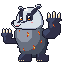
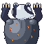
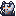
surtmeles
type: ild · utvikles fra tulimeles · 64×64 (ikon 16×16)
TULIMELES vokst opp: en oppreist grevling med brede skuldre, store lyse graveklør og glødende sprekker i pelsen. Navnet: Surt, ildjotnen i norrøn mytologi, + latin meles «grevling».
Idé
Legg arten inn i ARTER: "surtmeles": {"navn": "SURTMELES", "type": "ild", "liv": 30, "styrke": 5, "angrep": "LAVAGRAV"},. La TULIMELES utvikle seg på nivå 10: i sjekk_nivaa(), rett etter at nivået økes: if egen["art"] == "tulimeles" and egen["nivaa"] >= 10: egen["art"] = "surtmeles"; egen["navn"] = "SURTMELES". Bildene heter art + "_foran" og art + "_bak", så neste kamp viser den nye formen.
Bilder: surtmeles_foran, surtmeles_bak, surtmeles_ikon
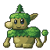
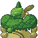
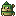
hiisammal
type: gress · utvikles fra sammalus · 64×64 (ikon 16×16)
SAMMALUS vokst opp: et stort, snilt skogtroll med moseskuldre, lange armer og en gran på hodet. Navnet: finsk hiisi «skogsvette» + sammal «mose».
Idé
Legg arten inn i ARTER: "hiisammal": {"navn": "HIISAMMAL", "type": "gress", "liv": 32, "styrke": 4, "angrep": "MOSESKRED"},. Utvikling fra sammalus på nivå 10, på samme måte som SURTMELES. Gi den mer liv enn styrke – den er seig.
Bilder: hiisammal_foran, hiisammal_bak, hiisammal_ikon
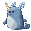
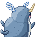
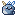
njordkorn
type: vann · utvikles fra merikorn · 64×64 (ikon 16×16)
MERIKORN vokst opp: en stolt narhval med lang spiraltann og to hvite «hjelmvinger» av bølgeskum. Navnet: Njord, havguden, + latin unicornis «enhjørning».
Idé
Legg arten inn i ARTER: "njordkorn": {"navn": "NJORDKORN", "type": "vann", "liv": 31, "styrke": 5, "angrep": "SPRINGFLO"},. Utvikling fra merikorn på nivå 10. Bruk effekten vann som før.
Bilder: njordkorn_foran, njordkorn_bak, njordkorn_ikon
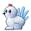
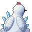
glaciopus
type: is · 64×64 (ikon 16×16)
En rund vinterrype med rød kam, fjærkledde «snøsko»-føtter og en viftehale av is. Navnet: latin glacies «is» + Lagopus, det latinske navnet på rypa.
Idé
Legg arten inn i ARTER: "glaciopus": {"navn": "GLACIOPUS", "type": "is", "liv": 20, "styrke": 3, "angrep": "ISSPYD"},. Ny type: TYPER["is"] = {"effekt": "is", "lyd": "angrep_vann"} og f.eks. STERK_MOT["is"] = ["gress"], og legg "is" til hos ild: STERK_MOT["ild"].append("is").
Bilder: glaciopus_foran, glaciopus_bak, glaciopus_ikon
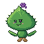
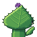
urtinokka
type: gift · 64×64 (ikon 16×16)
En ilter brennesle med tannet bladhode, lyse stikkhår og en lilla blomsterdusk. Navnet: latin urtica + finsk nokkonen – begge betyr «brennesle».
Idé
Legg arten inn i ARTER: "urtinokka": {"navn": "URTINOKKA", "type": "gift", "liv": 18, "styrke": 2, "angrep": "SVIEHÅR"},. Ny type: TYPER["gift"] = {"effekt": "gift", "lyd": "angrep_blad"} og STERK_MOT["gift"] = ["gress"]. Idé: gift kan gjøre 1 ekstra skade hver runde i 3 runder.
Bilder: urtinokka_foran, urtinokka_bak, urtinokka_ikon
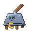
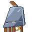
ferrokas
type: metall · 64×64 (ikon 16×16)
En levende ostehøvel (en norsk oppfinnelse!) med en osteskive som krøller seg opp av spalten. Navnet: latin ferrum «jern» + caseus «ost».
Idé
Legg arten inn i ARTER: "ferrokas": {"navn": "FERROKAS", "type": "metall", "liv": 22, "styrke": 3, "angrep": "TYNNSKJÆR"},. Ny type: TYPER["metall"] = {"effekt": "metall", "lyd": "angrep_stein"} og STERK_MOT["metall"] = ["stein", "is"]. Idé: metall tar halv skade fra normal.
Bilder: ferrokas_foran, ferrokas_bak, ferrokas_ikon
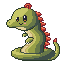
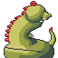
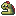
lindraco
type: drage · 64×64 (ikon 16×16)
En liten lindorm uten vinger, med to forbein, rød finnemanke og krøll på hodet. Navnet: norrønt linnormr «lindorm» + latin draco «drage».
Idé
Legg arten inn i ARTER: "lindraco": {"navn": "LINDRACO", "type": "drage", "liv": 24, "styrke": 4, "angrep": "ORMEPUST"},. Ny type: TYPER["drage"] = {"effekt": "ild", "lyd": "angrep_ild"} og STERK_MOT["drage"] = ["drage"]. Gjør den sjelden i VILLE_MONSTRE (bare én gang i lista).
Bilder: lindraco_foran, lindraco_bak, lindraco_ikon
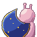
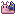
lunalimax
type: magi · 64×64 (ikon 16×16)
En blekrosa snegl som bærer et hus formet som en nattblå månesigd, og lager glitterspor. Navnet: latin luna «måne» + limax «snegl».
Idé
Legg arten inn i ARTER: "lunalimax": {"navn": "LUNALIMAX", "type": "magi", "liv": 20, "styrke": 3, "angrep": "MÅNESPOR"},. Ny type: TYPER["magi"] = {"effekt": "glitter", "lyd": "angrep_lyn"} og STERK_MOT["magi"] = ["spokelse"]. Kanskje den bare dukker opp om kvelden i spillet ditt?
Bilder: lunalimax_foran, lunalimax_bak, lunalimax_ikon
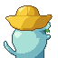
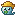
draugnaut
type: spokelse · 64×64 (ikon 16×16)
En liten sjødraug i gul sydvest, med blekt ansikt, tangskjegg og en spøkelseshale. Navnet: norrønt draugr «gjenganger» + latin nauta «sjømann».
Idé
Legg arten inn i ARTER: "draugnaut": {"navn": "DRAUGNAUT", "type": "spokelse", "liv": 18, "styrke": 3, "angrep": "SJØDIS"},. Ny type: TYPER["spokelse"] = {"effekt": "poff", "lyd": "angrep_normal"} og STERK_MOT["spokelse"] = ["magi", "spokelse"]. Normal-angrep kan bomme mot spøkelser.
Bilder: draugnaut_foran, draugnaut_bak, draugnaut_ikon
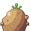
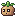
peruterra
type: jord · 64×64 (ikon 16×16)
En gretten potet med groer på hodet og jordflekker. Navnet: finsk peruna «potet» + latin terra «jord».
Idé
Legg arten inn i ARTER: "peruterra": {"navn": "PERUTERRA", "type": "jord", "liv": 24, "styrke": 3, "angrep": "JORDKAST"},. Ny type: TYPER["jord"] = {"effekt": "stov", "lyd": "angrep_stein"} og STERK_MOT["jord"] = ["lyn", "ild", "metall"].
Bilder: peruterra_foran, peruterra_bak, peruterra_ikon
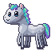
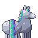
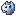
sleipnir
type: magi · 64×64 (ikon 16×16)
Et sjeldent, legendarisk monster: Odins åttebeinte hest, skimmelgrå med manke og hale i nordlysfarger.
Idé
Legg arten inn i ARTER: "sleipnir": {"navn": "SLEIPNIR", "type": "magi", "liv": 40, "styrke": 6, "angrep": "ÅTTEGALOPP"},. Gjem den ett sted i spillet (f.eks. én spesiell rute i høyt gress, eller etter at alle andre er fanget) i stedet for å legge den i VILLE_MONSTRE.
Bilder: sleipnir_foran, sleipnir_bak, sleipnir_ikon
Effekter
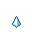
fx_is
type: is · 32×32
Iskrystaller som vokser fram og splintres med små glimt.
Idé
Brukes av en ny is-type: TYPER["is"] = {"effekt": "is", ...}. Motoren teller filene fx_is_1, fx_is_2, fx_is_3 selv.
Bilder: fx_is_1, fx_is_2, fx_is_3
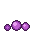
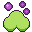
fx_gift
type: gift · 32×32
Lilla giftbobler som stiger og sprekker i en grønn giftsky.
Idé
Brukes av en ny gift-type: TYPER["gift"] = {"effekt": "gift", ...}.
Bilder: fx_gift_1, fx_gift_2, fx_gift_3
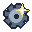
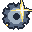
fx_metall
type: metall · 32×32
Et tannhjul i stål som vokser, med et blankt messingglimt.
Idé
Brukes av en ny metall-type: TYPER["metall"] = {"effekt": "metall", ...}.
Bilder: fx_metall_1, fx_metall_2, fx_metall_3
Folk


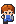
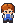
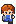
butikk
16×24
Butikkansatt i Handel: rødbrunt hår, hvit skjorte og blått forkle. Har stå-bilde for hver retning og fire gangbilder per retning (1 og 3 står, 2 og 4 er steg).
Idé
Stå bak disken i butikken og selg drikk: "replikker": ["Velkommen til Handel!"]. Legg personen i folk-lista som mor: {"bilde": "butikk", "kart": "byen", "kolonne": 4, "rad": 6, "retning": "ned", "replikker": [...]}. Vil du at hen skal gå, bytt bilde i en løkke: figur.animer(["butikk_ned_1", "butikk_ned_2", "butikk_ned_3", "butikk_ned_4"], fart=8).
Bilder: butikk_ned, butikk_opp, butikk_venstre, butikk_hoyre, butikk_ned_1, butikk_ned_2, butikk_ned_3, butikk_ned_4, butikk_opp_1, butikk_opp_2, butikk_opp_3, butikk_opp_4, butikk_venstre_1, butikk_venstre_2, butikk_venstre_3, butikk_venstre_4, butikk_hoyre_1, butikk_hoyre_2, butikk_hoyre_3, butikk_hoyre_4
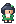
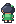
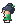
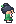
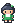

vert
16×24
Verten i hvilehuset: mørkt hår i knute med bladspenne og grønn kjole med hvitt bryst. Har stå-bilde for hver retning og fire gangbilder per retning (1 og 3 står, 2 og 4 er steg).
Idé
Verten står allerede bak skranken i hvilehuset. Lag et nytt hvilehus i en annen by med samme vert! Legg personen i folk-lista som mor: {"bilde": "vert", "kart": "byen", "kolonne": 4, "rad": 6, "retning": "ned", "replikker": [...]}. Vil du at hen skal gå, bytt bilde i en løkke: figur.animer(["vert_ned_1", "vert_ned_2", "vert_ned_3", "vert_ned_4"], fart=8).
Bilder: vert_ned, vert_opp, vert_venstre, vert_hoyre, vert_ned_1, vert_ned_2, vert_ned_3, vert_ned_4, vert_opp_1, vert_opp_2, vert_opp_3, vert_opp_4, vert_venstre_1, vert_venstre_2, vert_venstre_3, vert_venstre_4, vert_hoyre_1, vert_hoyre_2, vert_hoyre_3, vert_hoyre_4
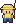


fisker
16×24
Fisker med gul regnhatt og regnjakke, grått skjegg og gummistøvler. Har stå-bilde for hver retning og fire gangbilder per retning (1 og 3 står, 2 og 4 er steg).
Idé
Plasser fiskeren på stranda eller ved brua og la ham fortelle om monstre i sjøen. Legg personen i folk-lista som mor: {"bilde": "fisker", "kart": "byen", "kolonne": 4, "rad": 6, "retning": "ned", "replikker": [...]}. Vil du at hen skal gå, bytt bilde i en løkke: figur.animer(["fisker_ned_1", "fisker_ned_2", "fisker_ned_3", "fisker_ned_4"], fart=8).
Bilder: fisker_ned, fisker_opp, fisker_venstre, fisker_hoyre, fisker_ned_1, fisker_ned_2, fisker_ned_3, fisker_ned_4, fisker_opp_1, fisker_opp_2, fisker_opp_3, fisker_opp_4, fisker_venstre_1, fisker_venstre_2, fisker_venstre_3, fisker_venstre_4, fisker_hoyre_1, fisker_hoyre_2, fisker_hoyre_3, fisker_hoyre_4


fjellvandrer
16×24
Fjellvandrer med strikkelue, skjegg, rød jakke og stor grønn sekk. Har stå-bilde for hver retning og fire gangbilder per retning (1 og 3 står, 2 og 4 er steg).
Idé
Sett ham ved huleinngangen: «Det er mørkt der inne – ta med en lykt!» Legg personen i folk-lista som mor: {"bilde": "fjellvandrer", "kart": "byen", "kolonne": 4, "rad": 6, "retning": "ned", "replikker": [...]}. Vil du at hen skal gå, bytt bilde i en løkke: figur.animer(["fjellvandrer_ned_1", "fjellvandrer_ned_2", "fjellvandrer_ned_3", "fjellvandrer_ned_4"], fart=8).
Bilder: fjellvandrer_ned, fjellvandrer_opp, fjellvandrer_venstre, fjellvandrer_hoyre, fjellvandrer_ned_1, fjellvandrer_ned_2, fjellvandrer_ned_3, fjellvandrer_ned_4, fjellvandrer_opp_1, fjellvandrer_opp_2, fjellvandrer_opp_3, fjellvandrer_opp_4, fjellvandrer_venstre_1, fjellvandrer_venstre_2, fjellvandrer_venstre_3, fjellvandrer_venstre_4, fjellvandrer_hoyre_1, fjellvandrer_hoyre_2, fjellvandrer_hoyre_3, fjellvandrer_hoyre_4


rival
16×24
En annen monsterjeger: svart piggete hår, hvitt pannebånd, lilla jakke og grå sekk. Har stå-bilde for hver retning og fire gangbilder per retning (1 og 3 står, 2 og 4 er steg).
Idé
La rivalen gå mot helten (animer + flytt figuren) og starte en kamp når de møtes. Legg personen i folk-lista som mor: {"bilde": "rival", "kart": "byen", "kolonne": 4, "rad": 6, "retning": "ned", "replikker": [...]}. Vil du at hen skal gå, bytt bilde i en løkke: figur.animer(["rival_ned_1", "rival_ned_2", "rival_ned_3", "rival_ned_4"], fart=8).
Bilder: rival_ned, rival_opp, rival_venstre, rival_hoyre, rival_ned_1, rival_ned_2, rival_ned_3, rival_ned_4, rival_opp_1, rival_opp_2, rival_opp_3, rival_opp_4, rival_venstre_1, rival_venstre_2, rival_venstre_3, rival_venstre_4, rival_hoyre_1, rival_hoyre_2, rival_hoyre_3, rival_hoyre_4


trener_1
16×24
Sporty trener med gult svettebånd, rød trøye og hvite shorts. Har stå-bilde for hver retning og fire gangbilder per retning (1 og 3 står, 2 og 4 er steg).
Idé
En trener i høyt gress som utfordrer helten til kamp når hen ser deg. Legg personen i folk-lista som mor: {"bilde": "trener_1", "kart": "byen", "kolonne": 4, "rad": 6, "retning": "ned", "replikker": [...]}. Vil du at hen skal gå, bytt bilde i en løkke: figur.animer(["trener_1_ned_1", "trener_1_ned_2", "trener_1_ned_3", "trener_1_ned_4"], fart=8).
Bilder: trener_1_ned, trener_1_opp, trener_1_venstre, trener_1_hoyre, trener_1_ned_1, trener_1_ned_2, trener_1_ned_3, trener_1_ned_4, trener_1_opp_1, trener_1_opp_2, trener_1_opp_3, trener_1_opp_4, trener_1_venstre_1, trener_1_venstre_2, trener_1_venstre_3, trener_1_venstre_4, trener_1_hoyre_1, trener_1_hoyre_2, trener_1_hoyre_3, trener_1_hoyre_4


trener_2
16×24
Sporty trener med rødbrun høy hestehale, hvit topp og oransje skjørt. Har stå-bilde for hver retning og fire gangbilder per retning (1 og 3 står, 2 og 4 er steg).
Idé
Kan stå i arenaen som siste motstander før arenamesteren. Legg personen i folk-lista som mor: {"bilde": "trener_2", "kart": "byen", "kolonne": 4, "rad": 6, "retning": "ned", "replikker": [...]}. Vil du at hen skal gå, bytt bilde i en løkke: figur.animer(["trener_2_ned_1", "trener_2_ned_2", "trener_2_ned_3", "trener_2_ned_4"], fart=8).
Bilder: trener_2_ned, trener_2_opp, trener_2_venstre, trener_2_hoyre, trener_2_ned_1, trener_2_ned_2, trener_2_ned_3, trener_2_ned_4, trener_2_opp_1, trener_2_opp_2, trener_2_opp_3, trener_2_opp_4, trener_2_venstre_1, trener_2_venstre_2, trener_2_venstre_3, trener_2_venstre_4, trener_2_hoyre_1, trener_2_hoyre_2, trener_2_hoyre_3, trener_2_hoyre_4


gammel_mann
16×24
Gammel mann med hvite tjafser, bart og brun strikkejakke. Har stå-bilde for hver retning og fire gangbilder per retning (1 og 3 står, 2 og 4 er steg).
Idé
Han kan gi helten en nøkkel eller et kart: legg til tingen i sekken når dere har snakket. Legg personen i folk-lista som mor: {"bilde": "gammel_mann", "kart": "byen", "kolonne": 4, "rad": 6, "retning": "ned", "replikker": [...]}. Vil du at hen skal gå, bytt bilde i en løkke: figur.animer(["gammel_mann_ned_1", "gammel_mann_ned_2", "gammel_mann_ned_3", "gammel_mann_ned_4"], fart=8).
Bilder: gammel_mann_ned, gammel_mann_opp, gammel_mann_venstre, gammel_mann_hoyre, gammel_mann_ned_1, gammel_mann_ned_2, gammel_mann_ned_3, gammel_mann_ned_4, gammel_mann_opp_1, gammel_mann_opp_2, gammel_mann_opp_3, gammel_mann_opp_4, gammel_mann_venstre_1, gammel_mann_venstre_2, gammel_mann_venstre_3, gammel_mann_venstre_4, gammel_mann_hoyre_1, gammel_mann_hoyre_2, gammel_mann_hoyre_3, gammel_mann_hoyre_4


barn
16×24
Et lite barn (lavere enn de andre) med gul t-skjorte og blå snekkerbukse. Har stå-bilde for hver retning og fire gangbilder per retning (1 og 3 står, 2 og 4 er steg).
Idé
Barnet kan løpe i ring på torget: bytt retning hvert sekund med etter(1, snu). Legg personen i folk-lista som mor: {"bilde": "barn", "kart": "byen", "kolonne": 4, "rad": 6, "retning": "ned", "replikker": [...]}. Vil du at hen skal gå, bytt bilde i en løkke: figur.animer(["barn_ned_1", "barn_ned_2", "barn_ned_3", "barn_ned_4"], fart=8).
Bilder: barn_ned, barn_opp, barn_venstre, barn_hoyre, barn_ned_1, barn_ned_2, barn_ned_3, barn_ned_4, barn_opp_1, barn_opp_2, barn_opp_3, barn_opp_4, barn_venstre_1, barn_venstre_2, barn_venstre_3, barn_venstre_4, barn_hoyre_1, barn_hoyre_2, barn_hoyre_3, barn_hoyre_4
Hus av fliser
blått tak
16×16
Et fjerde tak til egne hus: mønet (ov, o, oh, pipe), midtrader (v, m, h, vindu) og takskjegget (nv, n, nh). Taket blir høyere med flere midtrader og bredere med flere midtfliser.
Idé
Bygg et eget hus i KART_BYEN: to eller tre takrader, så to veggrader (vegg_hvit_*, vindu_hvit, dor_hvit_o over dor_hvit). Gi flisene nye tegn i RUTER_UTE, legg dem i HINDRINGER_UTE (ikke døra!), og lag et nytt kart for innsiden med to dører i DORER.
Bilder: tak_bla_ov, tak_bla_o, tak_bla_oh, tak_bla_pipe, tak_bla_v, tak_bla_m, tak_bla_h, tak_bla_vindu, tak_bla_nv, tak_bla_n, tak_bla_nh
flere takfliser
16×16
Midtradene til de andre takene og en hvit vegg uten vindu. Med dem kan husene bli høyere og bredere.
Idé
Hjemmet med tre takrader: "7889", "4556", "1223" – og ett tegn til for hver ny flis.
Bilder: tak_rod_v, tak_rod_m, tak_rod_h, tak_gronn_v, tak_gronn_m, tak_gronn_h, tak_gra_v, tak_gra_m, tak_gra_h, vegg_hvit_o
Inne
soverom
16×16
Seng (1 × 2 ruter: seng_o over seng_n), stol, TV, plante, klokke og bilde på veggen.
Idé
Trappa hjemme (T og t) fører ingen steder. Lag KART_LOFTET med en seng, og en dør i DORER fra trappa!
Bilder: seng_o, seng_n, stol, tv, plante, klokke_hjem, veggbilde_hjem
teppe
16×16
Teppe i ni biter: hjørner, kanter og midten. Gjenta midten for et større teppe.
Idé
"789", "456", "123" i kartet gir et teppe på 3 × 3 ruter.
Bilder: teppe_ov, teppe_o, teppe_oh, teppe_v, teppe_m, teppe_h, teppe_nv, teppe_n, teppe_nh
hvilehus-møbler
16×16 og 112×16
Bladhylle og brusautomat (1 × 2 ruter), en rund krakk, skranken med ting på (mønster, 7 ruter) og en blå sofa til tregulvet hjemme.
Idé
Lag en kiosk i hvilehuset: snakker helten med automaten (Q/q), kan hen kjøpe en drikk.
Bilder: bladhylle_hvile_o, bladhylle_hvile_n, automat_hvile_o, automat_hvile_n, krakk_hvile, disk_rad, sofa_hjem_v, sofa_hjem_h
Natur
mer natur
16×16
Et tredje gress, blomster (animer med blomster_1), en variant av høyt gress og sti, sand og tett skog.
Idé
Blomster som vaier: "*": ["blomster_1", "blomster_2"] i RUTER_UTE.
Bilder: gress_3, blomster_2, hoyt_gress_2, sti_2, sand, skog
bjørk
16×16 (2 × 2 ruter) og 32×32
Bjørk med hvit stamme og lett, gulgrønn krone. Fire fliser som løvtreet og grana, eller én figur (bjork).
Idé
Bjørka står allerede på stien (tu over hi). Plant flere: skriv "tu" og "hi" under hverandre i kartet. Tegnene står i RUTER_UTE, NATUR og HINDRINGER_UTE.
Bilder: bjork_ov, bjork_oh, bjork_nv, bjork_nh, bjork
store flater (mønstre)
64×64, 48×48 og 32×16
Gress, sti og vann som store mønsterbilder: hver rute viser sin egen bit av bildet, så rutenettet ikke synes. kantstein_rad er en sammenhengende steinkant.
Idé
Brukes allerede i RUTER_UTE (".": "gress_flate"). Et bilde i RUTER kan være større enn 16 × 16 når bredden og høyden går opp i 16 – prøv "=": "sti_flate" på et nytt kart.
Bilder: gress_flate, sti_flate, vann_flate_1, vann_flate_2, vann_flate_3, kantstein_rad
Bygninger
butikk
64×64 (4 × 4 ruter)
Butikken «Handel» med blått tak, markiser og glassdør. Hele bygningen er ett bilde, ikke fliser. Døra står nederst i bildet, i ruta 2 til høyre og 3 ned fra hjørnet oppe til venstre.
Idé
Sett bildet som en figur oppå 4 × 4 ruter i et kart (øverste venstre hjørne i kolonne K, rad R): ting.append(Figur("butikk", K * RUTE, R * RUTE)) i bygg_kart() når kartet er byen. Skriv et tegn som er en hindring (f.eks. H med gress som bilde) i alle rutene under bildet, unntatt døra, som er ruta (K + 2, R + 3). Lag så en dør i DORER: {"fra": "byen", "kolonne": K + 2, "rad": R + 3, "til": "butikken", "til_kolonne": 7, "til_rad": 7} – og et kart for innsiden med en dørmatte som fører tilbake til ruta under døra.
Bilder: butikk
arena
112×80 (7 × 5 ruter)
Monsterarena med to tårn, flagg og en stor glassdør (ruta 3 til høyre og 4 ned).
Idé
Sett bildet som en figur oppå 7 × 5 ruter i et kart (øverste venstre hjørne i kolonne K, rad R): ting.append(Figur("arena", K * RUTE, R * RUTE)) i bygg_kart() når kartet er byen. Skriv et tegn som er en hindring (f.eks. H med gress som bilde) i alle rutene under bildet, unntatt døra, som er ruta (K + 3, R + 4). Lag så en dør i DORER: {"fra": "byen", "kolonne": K + 3, "rad": R + 4, "til": "arenaen", "til_kolonne": 7, "til_rad": 7} – og et kart for innsiden med en dørmatte som fører tilbake til ruta under døra.
Bilder: arena
hus_3
64×64 (4 × 4 ruter)
Bolighus med brunt tak, takvindu og stort vindu med blomsterkasse (døra: ruta 1 til høyre og 3 ned).
Idé
Sett bildet som en figur oppå 4 × 4 ruter i et kart (øverste venstre hjørne i kolonne K, rad R): ting.append(Figur("hus_3", K * RUTE, R * RUTE)) i bygg_kart() når kartet er byen. Skriv et tegn som er en hindring (f.eks. H med gress som bilde) i alle rutene under bildet, unntatt døra, som er ruta (K + 1, R + 3). Lag så en dør i DORER: {"fra": "byen", "kolonne": K + 1, "rad": R + 3, "til": "naboen", "til_kolonne": 7, "til_rad": 7} – og et kart for innsiden med en dørmatte som fører tilbake til ruta under døra.
Bilder: hus_3
fjellhytte
48×48 (3 × 3 ruter)
Liten tømmerhytte med steintak og snø på mønet (døra: ruta 1 til høyre og 2 ned).
Idé
Sett bildet som en figur oppå 3 × 3 ruter i et kart (øverste venstre hjørne i kolonne K, rad R): ting.append(Figur("fjellhytte", K * RUTE, R * RUTE)) i bygg_kart() når kartet er byen. Skriv et tegn som er en hindring (f.eks. H med gress som bilde) i alle rutene under bildet, unntatt døra, som er ruta (K + 1, R + 2). Lag så en dør i DORER: {"fra": "byen", "kolonne": K + 1, "rad": R + 2, "til": "hytta", "til_kolonne": 7, "til_rad": 7} – og et kart for innsiden med en dørmatte som fører tilbake til ruta under døra. Fin på et fjellkart med fjellvandreren utenfor.
Bilder: fjellhytte
Terreng
sjø
16×16
Dyp sjø med hvite bølgetopper i tre animasjonsbilder.
Idé
"~": ["sjo_1", "sjo_2", "sjo_3"] i RUTER, og legg "~" i HINDRINGER.
Bilder: sjo_1, sjo_2, sjo_3
strand
16×16
Sand med skjell og småstein, og kanter der sjøen møter sanden (skum og våt sand).
Idé
"s": "strand_1" i RUTER og "~": ("strandkant", "sS") i KANTER.
Bilder: strand_1, strand_2, strandkant_ned, strandkant_opp, strandkant_venstre, strandkant_hoyre
hoppkant
16×16
Lav steinkant i gresset. Man kan hoppe ned over den, men ikke gå opp igjen.
Idé
Sjekk retningen: if rute_ved(x, y) == "_" and retning == "ned": y += 2 * RUTE (hopp over kanten).
Bilder: hoppkant_ned, hoppkant_venstre, hoppkant_hoyre
stup
16×16
Høy klippevegg: topp mot gress, midtstykke og fot med småstein. Kan stables.
Idé
Tre rader i kartet: T (stup_topp), | (stup), B (stup_bunn). Alle er hindringer.
Bilder: stup_topp, stup, stup_bunn
hule
32×32 og 16×16
Huleinngang i klippeveggen (åpning x 10–21, y 16–31), og gulv og vegg til inne i hula.
Idé
Legg Figur("hule", ...) over to ganger to stup-ruter; går helten inn i åpningen, bytt til et hulekart.
Bilder: hule, hulegulv, hulevegg
bro_loddrett
16×16
Trebro man går opp og ned på (bro går bortover).
Idé
"I": "bro_loddrett" i RUTER over en elv av vann_1.
Bilder: bro_loddrett

skog
16×16
Mørk, tett skog. skog_kant er nederste rad med stammer og skygge mot gresset.
Idé
Ramme inn kartet med F (skog_tett) og f (skog_kant) i stedet for trær.
Bilder: skog_tett, skog_kant
blomstereng
16×16
Eng med mange små blomster i gult, lilla og hvitt.
Idé
Bland dem med gress_1 eller gress_flate for en eng. De kan også være et nytt sted der monstre dukker opp.
Bilder: blomstereng_gul, blomstereng_lilla, blomstereng_hvit
vannhjørner
16×16
Indre hjørner av vann (ov = oppe til venstre, nh = nede til høyre) i tre animasjonsbilder.
Idé
Der to vannkanter møtes innover: "1": ["vannhjorne_ov_1", "vannhjorne_ov_2", "vannhjorne_ov_3"].
Bilder: vannhjorne_ov_1, vannhjorne_ov_2, vannhjorne_ov_3, vannhjorne_oh_1, vannhjorne_oh_2, vannhjorne_oh_3, vannhjorne_nv_1, vannhjorne_nv_2, vannhjorne_nv_3, vannhjorne_nh_1, vannhjorne_nh_2, vannhjorne_nh_3
steinsti
16×16
Brostein til torget i byen (steinsti_2 har litt gress i fugene).
Idé
Bytt "sti_flate" med "steinsti" i RUTER for byen, og behold stikant i KANTER.
Bilder: steinsti, steinsti_2
Ting
drikk
16×16
Helbredelsesdrikk: rød (litt liv) og blå (mye liv).
Idé
Legg den på kartet som en figur; når helten treffer den: liv = min(liv + 20, maks_liv) og figur.fjern().
Bilder: drikk, drikk_stor
bær
16×16
Røde og blå bær på en kvist.
Idé
Bær kan gi monsteret litt liv i kamp, eller være noe man samler.
Bilder: baer_rod, baer_bla
nokkel
16×16
En gullnøkkel.
Idé
Låser opp en dør: if har_nokkel: ....
Bilder: nokkel
kart
16×16
Et brettet kart med vann, skog og et rødt kryss.
Idé
Trykk M for å vise kartet over hele skjermen når helten har funnet det.
Bilder: kart
funnkule
16×16
En gjenstand som ligger på bakken (glimter i bilde 2).
Idé
kule.animer(["funnkule_1", "funnkule_2"], fart=30); gå bort til den for å plukke opp noe.
Bilder: funnkule_1, funnkule_2
sykkel
32×24
Rød sykkel sett fra siden.
Idé
Med sykkel går helten dobbelt så fort.
Bilder: sykkel
benk
32×16
Trebenk.
Idé
Pynt på torget eller i parken (to ruter bred).
Bilder: benk
gatelykt
16×32
Gatelykt med varmt lys.
Idé
Står på fortauet; fin sammen med kampbakgrunn_natt.
Bilder: gatelykt
skilt_2
16×16
Lav steintavle (veiviser), på gress.
Idé
Som skilt: en hindring som kan leses.
Bilder: skilt_2
postkasse_2
16×16
Rød postkasse, på gress.
Idé
Brev fra professoren?
Bilder: postkasse_2
hydrant
16×16
Rød brannhydrant, på gress.
Idé
Byinventar; legg den i HINDRINGER.
Bilder: hydrant
blomsterkrukke
16×16
Krukke med blomster, på gress.
Idé
Pynt ved dørene.
Bilder: blomsterkrukke
kasse
16×16
Trekasse, på gress.
Idé
Kan dyttes: flytt kassen én rute når helten går mot den.
Bilder: kasse
tonne
16×16
Tretønne, på gress.
Idé
Kanskje noe er gjemt i en av tønnene?
Bilder: tonne
Kamp
kampbakgrunn_hule
240×112, 96×24 og 112×28
Mørk hule med dryppstein og krystaller. Plattformene står på samme sted som de vanlige.
Idé
Bytt bakgrunn når kampen starter: kamp_bakgrunn.bilde = "kampbakgrunn_hule" og plattform_egen.bilde = "plattform_hule_egen".
Bilder: kampbakgrunn_hule, plattform_hule_motstander, plattform_hule_egen
kampbakgrunn_strand
240×112, 96×24 og 112×28
Strand med hav i horisonten. Plattformene står på samme sted som de vanlige.
Idé
Bytt bakgrunn når kampen starter: kamp_bakgrunn.bilde = "kampbakgrunn_strand" og plattform_egen.bilde = "plattform_strand_egen".
Bilder: kampbakgrunn_strand, plattform_strand_motstander, plattform_strand_egen
kampbakgrunn_natt
240×112, 96×24 og 112×28
Natt på enga med stjerner, måne og ildfluer. Plattformene står på samme sted som de vanlige.
Idé
Bytt bakgrunn når kampen starter: kamp_bakgrunn.bilde = "kampbakgrunn_natt" og plattform_egen.bilde = "plattform_natt_egen".
Bilder: kampbakgrunn_natt, plattform_natt_motstander, plattform_natt_egen
Når du står fast
Alt spillmotoren kan, og navnene på alle bilder, lyder og all musikk. Du finner det samme
øverst i spillmotor.py.
Grunnmuren
from spillmotor import *
helt = Figur("helt_ned_1", 7 * RUTE, 4 * RUTE)
skritt = 0
def oppdater(): # kjøres 60 ganger i sekundet
global skritt # trengs når du ENDRER en variabel som står utenfor
if tast_holdes("hoyre"):
helt.x = helt.x + 1
skritt = skritt + 1
start(tittel="Mitt spill") # helt nederstSkjermen er 15 × 10 ruter. Hver rute er 16 × 16 piksler, altså 240 × 160 piksler
til sammen. x øker mot høyre, y øker nedover.
Rute (kolonne 3, rad 2) har øverste venstre hjørne i x = 3 * RUTE, y = 2 * RUTE.
Figurer, tekst og firkanter
| Kode | Hva den gjør |
|---|---|
Figur("navn", x, y) | en figur med et bilde fra mappen bilder/ |
figur.x, figur.y | posisjonen (øverste venstre hjørne) |
figur.bilde = "navn" | bytter bilde – slik animerer du |
figur.animer(["a", "b"], fart=10) | bytter bilde automatisk (lavere fart = raskere) |
figur.bredde, figur.hoyde | størrelsen på bildet |
figur.midt_x, figur.midt_y | midtpunktet |
figur.treffer(annen) | True hvis figurene overlapper |
Figur(..., treffboks=(2, 16, 12, 8)) | bare denne delen av bildet kan treffes (her: føttene) |
figur.synlig = False | skjuler figuren |
figur.fjern() | fjerner figuren for godt |
Figur(..., skygge=True) | liten skygge under føttene |
Figur(..., lag=0) | lag 0 = bakgrunn, 1 = figurer, 2 = effekter, 3 = tekst |
Tekst("Hei", x, y, farge="white", skygge="black") | tekst med pikselskrift. storrelse=2 gir dobbel størrelse, maks_bredde=200 bryter linjene |
tekst.tekst = "Ny tekst" | bytter teksten |
Rektangel(x, y, bredde, hoyde, "red") | en fylt firkant |
Kart og taster
| Kode | Hva den gjør |
|---|---|
tegn_kart(kart, ruter) | tegner et kart der hvert tegn er én rute |
rute_ved(x, y) | hvilket tegn som ligger på piksel x, y (eller None utenfor) |
endre_rute(kolonne, rad, "tegn") | bytter ut én rute, f.eks. når en dør åpnes |
tast_holdes("venstre") | True så lenge tasten holdes nede – til å gå |
tast_trykket("mellomrom") | True bare i øyeblikket tasten trykkes – til å slå og velge |
Effekter, lyd og tid
| Kode | Hva den gjør |
|---|---|
effekt("treff", x, y) | ferdig effekt: poff, treff, glitter, plask, stov, blader, gnister, hjerte, ild, vann, blad, lyn, stein, slag |
partikler(x, y, antall=10, farger=["red"], fart=1) | din egen sprut av piksler |
flytende_tekst("-3", x, y) | tekst som stiger opp og forsvinner |
figur.glimt() · figur.blink(1) · figur.rist() | figuren blir hvit · blinker i 1 sekund · rister |
rist_skjerm() · blink_skjerm("white") | hele skjermen rister · blinker |
overgang(funksjon) | toner ut, kaller funksjonen, toner inn. stil="kamp" gir blink og striper |
i_overgang() | True mens en overgang pågår |
spill_lyd("navn") · spill_musikk("navn") | spiller en lyd · starter musikk |
etter(2, funksjon) | kaller funksjonen om 2 sekunder (uten parenteser bak navnet!) |
tid() | sekunder siden spillet startet |
Feilmeldinger du kommer til å se
| Meldingen | Hva den betyr |
|---|---|
Fant ikke bildet "..." | Navnet er stavet feil, eller bildet finnes ikke. Motoren foreslår navn som ligner. |
Kjenner ikke tasten "..." | Tastenavnet er feil. Bruk "venstre", "hoyre", "opp", "ned", "mellomrom", "enter" eller en bokstav. |
NameError: name '...' is not defined | Du bruker en variabel som ikke finnes ennå – stavefeil, eller den lages lenger ned. |
UnboundLocalError | Du endrer en variabel inni oppdater() uten å skrive global navn øverst i funksjonen. |
IndentationError | Innrykket stemmer ikke. Alt inni en if eller funksjon må ha like mye innrykk. |
IndexError: list index out of range | Du spør etter en plass i en liste som ikke finnes – ofte en rute utenfor kartet. |
TypeError: ... 'NoneType' | Noe er None der du ventet en verdi. Glemt return i en funksjon? |
Alle bildene
Skriv navnet uten .png, for eksempel Figur("arena", 0, 0).
Størrelsen er 16 × 16 piksler hvis ikke annet står i oppgaven.
arenaautomat_hvile_nautomat_hvile_obaer_blabaer_rodbarn_hoyrebarn_hoyre_1barn_hoyre_2
barn_hoyre_3barn_hoyre_4barn_nedbarn_ned_1barn_ned_2barn_ned_3barn_ned_4barn_oppbarn_opp_1barn_opp_2
barn_opp_3barn_opp_4barn_venstre
barn_venstre_1barn_venstre_2
barn_venstre_3barn_venstre_4benkbenk_hbenk_vbjorkbjork_nhbjork_nvbjork_ohbjork_ovbladhylle_hvile_nbladhylle_hvile_oblomster_1blomster_2blomster_3blomsterbedblomstereng_gulblomstereng_hvitblomstereng_lillablomsterkrukke
bokhylle_lab_nbokhylle_lab_obokhylle_nbokhylle_obord_hbord_vbrobro_loddrettbuskbutikkbutikk_hoyrebutikk_hoyre_1butikk_hoyre_2
butikk_hoyre_3butikk_hoyre_4butikk_nedbutikk_ned_1butikk_ned_2butikk_ned_3butikk_ned_4butikk_oppbutikk_opp_1butikk_opp_2
butikk_opp_3butikk_opp_4butikk_venstrebutikk_venstre_1butikk_venstre_2
butikk_venstre_3butikk_venstre_4diskdisk_hdisk_helbrederdisk_raddisk_vdor_hvitdor_hvit_odor_labdor_lab_odormatte_flisdormatte_hviledormatte_tredraugnaut_bakdraugnaut_forandraugnaut_ikondrikkdrikk_storfx_blad_1fx_blad_2fx_blad_3fx_blad_4fx_gift_1fx_gift_2fx_gift_3fx_glitter_1fx_glitter_2fx_glitter_3fx_hjerte_1fx_hjerte_2fx_ild_1fx_ild_2fx_ild_3fx_ild_4fx_is_1fx_is_2fx_is_3fx_lyn_1fx_lyn_2fx_lyn_3fx_metall_1fx_metall_2fx_metall_3fx_plask_1fx_plask_2fx_plask_3fx_poff_1fx_poff_2fx_poff_3fx_poff_4fx_slag_1fx_slag_2fx_slag_3fx_stein_1fx_stein_2fx_stein_3fx_stov_1fx_stov_2fx_stov_3fx_treff_1fx_treff_2fx_treff_3fx_vann_1fx_vann_2fx_vann_3fx_vann_4fangstkule_1fangstkule_2fangstkule_3fangstkule_apen
fangstkule_kast_1fangstkule_kast_2fangstkule_kast_3fangstkule_kast_4ferrokas_bakferrokas_foranferrokas_ikonfisker_hoyre
fisker_hoyre_1fisker_hoyre_2fisker_hoyre_3fisker_hoyre_4fisker_nedfisker_ned_1fisker_ned_2fisker_ned_3fisker_ned_4fisker_oppfisker_opp_1fisker_opp_2
fisker_opp_3fisker_opp_4fisker_venstre
fisker_venstre_1fisker_venstre_2
fisker_venstre_3fisker_venstre_4fjellhyttefjellvandrer_hoyrefjellvandrer_hoyre_1fjellvandrer_hoyre_2
fjellvandrer_hoyre_3fjellvandrer_hoyre_4fjellvandrer_nedfjellvandrer_ned_1fjellvandrer_ned_2fjellvandrer_ned_3fjellvandrer_ned_4fjellvandrer_opp
fjellvandrer_opp_1fjellvandrer_opp_2fjellvandrer_opp_3fjellvandrer_opp_4fjellvandrer_venstre
fjellvandrer_venstre_1fjellvandrer_venstre_2fjellvandrer_venstre_3fjellvandrer_venstre_4funnkule_1funnkule_2gammel_mann_hoyre
gammel_mann_hoyre_1gammel_mann_hoyre_2gammel_mann_hoyre_3gammel_mann_hoyre_4gammel_mann_nedgammel_mann_ned_1gammel_mann_ned_2gammel_mann_ned_3gammel_mann_ned_4gammel_mann_opp
gammel_mann_opp_1gammel_mann_opp_2gammel_mann_opp_3gammel_mann_opp_4gammel_mann_venstre
gammel_mann_venstre_1gammel_mann_venstre_2
gammel_mann_venstre_3gammel_mann_venstre_4gatelyktgjerdeglaciopus_bakglaciopus_foranglaciopus_ikonglassbord_hglassbord_vglassdor_hvitglassdor_hvit_ograngran_nhgran_nvgran_ohgran_ovgress_1gress_2gress_3gress_blomstgress_flategulv_flisgulv_hvilegulv_tregulv_tre_2gutt_hoyre
gutt_hoyre_1gutt_hoyre_2gutt_hoyre_3gutt_hoyre_4gutt_ned
gutt_ned_1gutt_ned_2gutt_ned_3gutt_ned_4gutt_oppgutt_opp_1gutt_opp_2
gutt_opp_3gutt_opp_4gutt_venstregutt_venstre_1gutt_venstre_2
gutt_venstre_3gutt_venstre_4helbreder_nhelbreder_o
helt_hoyre_1helt_hoyre_2helt_hoyre_3helt_hoyre_4helt_jubel
helt_ned_1helt_ned_2helt_ned_3helt_ned_4
helt_opp_1helt_opp_2helt_opp_3helt_opp_4helt_slag_hoyrehelt_slag_nedhelt_slag_opphelt_slag_venstrehelt_venstre_1helt_venstre_2
helt_venstre_3helt_venstre_4hiisammal_bakhiisammal_foranhiisammal_ikonhoppkant_hoyrehoppkant_nedhoppkant_venstrehoyt_gresshoyt_gress_2hoyt_gress_overhp_rammehulehulegulvhulevegghus_3husskygge_indre_ovhusskygge_opphusskygge_sti_indre_ovhusskygge_sti_opphusskygge_sti_venstrehusskygge_sti_ytre_ovhusskygge_venstrehusskygge_ytre_ovhvileteppe_hhvileteppe_mhvileteppe_nhvileteppe_nhhvileteppe_nvhvileteppe_ohvileteppe_ohhvileteppe_ovhvileteppe_vhydrantinfoboks_egeninfoboks_motstanderinnervegg_hjem_ninnervegg_hjem_oinnervegg_hvile_ninnervegg_hvile_oinnervegg_lab_ninnervegg_lab_oinnervindu_hjeminnervindu_hvileinnervindu_lab
inneskygge_hoyreinneskygge_nedinneskygge_oppinneskygge_venstrejente_hoyre
jente_hoyre_1jente_hoyre_2jente_hoyre_3jente_hoyre_4jente_ned
jente_ned_1jente_ned_2jente_ned_3jente_ned_4jente_oppjente_opp_1jente_opp_2
jente_opp_3jente_opp_4jente_venstrejente_venstre_1jente_venstre_2
jente_venstre_3jente_venstre_4kamp_bakgrunnkampbakgrunn_hulekampbakgrunn_nattkampbakgrunn_skogkampbakgrunn_strandkantsteinkantstein_hoyrekantstein_radkantstein_venstrekartkassekjoleskap_nkjoleskap_oklokke_hjemklokke_hvileklokke_labkolbehylle_nkolbehylle_okrakk_hvilekvistulus_bakkvistulus_forankvistulus_ikonlabbenk_hlabbenk_vlag_bakgrunnlag_feltlag_felt_aktivlag_felt_besvimtlapanvett_baklapanvett_foranlapanvett_ikonlepulvis_baklepulvis_foranlepulvis_ikonlindraco_baklindraco_foranlindraco_ikonlunalimax_baklunalimax_foranlunalimax_ikonlyktebordlyktebord_hlyktebord_vmaskin_nmaskin_omenyboksmerikorn_bakmerikorn_foranmerikorn_ikonmobelskygge_oppmor_hoyre
mor_hoyre_1mor_hoyre_2mor_hoyre_3mor_hoyre_4mor_ned
mor_ned_1mor_ned_2mor_ned_3mor_ned_4mor_oppmor_opp_1mor_opp_2
mor_opp_3mor_opp_4mor_venstremor_venstre_1mor_venstre_2
mor_venstre_3mor_venstre_4morktnjordkorn_baknjordkorn_forannjordkorn_ikonnokkelpauseikon_avsluttpauseikon_fortsettpauseikon_klokkepauseikon_monstrepauseikon_musikkpauseikon_musikk_avpauseikon_sekkpausemeny_bunnpausemeny_radpausemeny_topppcpc_hvileperuterra_bakperuterra_foranperuterra_ikonpilplakat_hvileplakat_labplanteplante_flisplante_hvileplattform_egenplattform_hule_egenplattform_hule_motstanderplattform_motstanderplattform_natt_egenplattform_natt_motstanderplattform_skog_egenplattform_skog_motstanderplattform_strand_egenplattform_strand_motstanderpostkassepostkasse_2professor_hoyreprofessor_hoyre_1professor_hoyre_2
professor_hoyre_3professor_hoyre_4professor_ned
professor_ned_1professor_ned_2professor_ned_3professor_ned_4
professor_oppprofessor_opp_1professor_opp_2
professor_opp_3professor_opp_4professor_venstre
professor_venstre_1professor_venstre_2professor_venstre_3professor_venstre_4reol_nreol_orival_hoyre
rival_hoyre_1rival_hoyre_2
rival_hoyre_3rival_hoyre_4rival_nedrival_ned_1rival_ned_2rival_ned_3rival_ned_4rival_opprival_opp_1rival_opp_2
rival_opp_3rival_opp_4rival_venstre
rival_venstre_1rival_venstre_2
rival_venstre_3rival_venstre_4romdor_oppromkant_hoyreromkant_indre_ohromkant_indre_ovromkant_oppromkant_venstreromskygge_venstresammalus_baksammalus_foransammalus_ikonsandseng_nseng_osjo_1sjo_2sjo_3skap_nskap_oskiltskilt_2skilt_byskilt_hvilskilt_labskogskog_kantskog_tettskyggesleipnir_baksleipnir_foransleipnir_ikonsofa_hsofa_hjem_hsofa_hjem_vsofa_vstartvalg_bakgrunnsteinsteinstisteinsti_2stisti_2sti_flatestikant_hoyrestikant_indre_nhstikant_indre_nvstikant_indre_ohstikant_indre_ovstikant_nedstikant_oppstikant_venstrestikant_ytre_nhstikant_ytre_nvstikant_ytre_ohstikant_ytre_ovstolstrand_1strand_2strandkant_hoyrestrandkant_nedstrandkant_oppstrandkant_venstrestupstup_bunnstup_toppsurtmeles_baksurtmeles_foransurtmeles_ikonsverd_hoyresverd_nedsverd_oppsverd_venstresykkeltak_bla_htak_bla_mtak_bla_ntak_bla_nhtak_bla_nvtak_bla_otak_bla_ohtak_bla_ovtak_bla_pipetak_bla_vtak_bla_vindutak_gra_htak_gra_mtak_gra_ntak_gra_nhtak_gra_nvtak_gra_otak_gra_ohtak_gra_ovtak_gra_pipetak_gra_vtak_gra_vindutak_gronn_htak_gronn_mtak_gronn_ntak_gronn_nhtak_gronn_nvtak_gronn_otak_gronn_o_radtak_gronn_ohtak_gronn_ovtak_gronn_pipetak_gronn_vtak_gronn_vindutak_rod_htak_rod_mtak_rod_ntak_rod_nhtak_rod_nvtak_rod_otak_rod_ohtak_rod_ovtak_rod_pipetak_rod_vtak_rod_vindutanngris_baktanngris_forantanngris_ikontekstboksteppe_hteppe_mteppe_nteppe_nhteppe_nvteppe_oteppe_ohteppe_ovteppe_vtittel_bakgrunntittel_glans_1tittel_glans_2tittel_glans_3tittel_glans_4tittel_glans_5tittel_glans_6tittel_skilttonnetrapp_ntrapp_otre_nhtre_nvtre_ohtre_ovtre_topp_h_nedtre_topp_v_nedtrekrone_h_opptrekrone_v_opptrener_1_hoyre
trener_1_hoyre_1trener_1_hoyre_2trener_1_hoyre_3trener_1_hoyre_4trener_1_nedtrener_1_ned_1trener_1_ned_2trener_1_ned_3trener_1_ned_4trener_1_opp
trener_1_opp_1trener_1_opp_2
trener_1_opp_3trener_1_opp_4trener_1_venstre
trener_1_venstre_1trener_1_venstre_2
trener_1_venstre_3trener_1_venstre_4trener_2_hoyre
trener_2_hoyre_1trener_2_hoyre_2trener_2_hoyre_3trener_2_hoyre_4trener_2_nedtrener_2_ned_1trener_2_ned_2trener_2_ned_3trener_2_ned_4trener_2_opp
trener_2_opp_1trener_2_opp_2
trener_2_opp_3trener_2_opp_4trener_2_venstre
trener_2_venstre_1trener_2_venstre_2trener_2_venstre_3trener_2_venstre_4treskygge_h_opptreskygge_v_opptulimeles_baktulimeles_forantulimeles_ikontvurtinokka_bakurtinokka_foranurtinokka_ikonvalmskygge_venstrevann_1vann_2vann_3vann_flate_1vann_flate_2vann_flate_3vannhjorne_nh_1vannhjorne_nh_2vannhjorne_nh_3vannhjorne_nv_1vannhjorne_nv_2vannhjorne_nv_3vannhjorne_oh_1vannhjorne_oh_2vannhjorne_oh_3vannhjorne_ov_1vannhjorne_ov_2vannhjorne_ov_3vannkant_hoyre
vannkant_hoyre_1
vannkant_hoyre_2
vannkant_hoyre_3vannkant_indre_nh
vannkant_indre_nh_1
vannkant_indre_nh_2
vannkant_indre_nh_3
vannkant_indre_nvvannkant_indre_nv_1vannkant_indre_nv_2
vannkant_indre_nv_3vannkant_indre_oh
vannkant_indre_oh_1vannkant_indre_oh_2
vannkant_indre_oh_3vannkant_indre_ov
vannkant_indre_ov_1vannkant_indre_ov_2vannkant_indre_ov_3
vannkant_ned
vannkant_ned_1vannkant_ned_2
vannkant_ned_3vannkant_opp
vannkant_opp_1vannkant_opp_2vannkant_opp_3vannkant_venstre
vannkant_venstre_1vannkant_venstre_2vannkant_venstre_3
vannkant_ytre_nhvannkant_ytre_nh_1
vannkant_ytre_nh_2
vannkant_ytre_nh_3vannkant_ytre_nv
vannkant_ytre_nv_1vannkant_ytre_nv_2vannkant_ytre_nv_3vannkant_ytre_oh
vannkant_ytre_oh_1vannkant_ytre_oh_2vannkant_ytre_oh_3vannkant_ytre_ov
vannkant_ytre_ov_1vannkant_ytre_ov_2vannkant_ytre_ov_3vardkivi_bakvardkivi_foranvardkivi_ikonvegg_hvitvegg_hvit_blomstvegg_hvit_hvegg_hvit_ovegg_hvit_o_hvegg_hvit_o_vvegg_hvit_vvegg_labvegg_lab_hvegg_lab_ovegg_lab_o_hvegg_lab_o_vvegg_lab_vveggbilde_hjemveggkant_n_hoyreveggkant_n_venstreveggkant_o_hoyreveggkant_o_venstrevert_hoyre
vert_hoyre_1vert_hoyre_2vert_hoyre_3vert_hoyre_4vert_nedvert_ned_1vert_ned_2vert_ned_3vert_ned_4vert_opp
vert_opp_1vert_opp_2vert_opp_3vert_opp_4vert_venstre
vert_venstre_1vert_venstre_2vert_venstre_3vert_venstre_4vindu_hvitvindu_labLyder
spill_lyd("navn")
angrep_bladangrep_ildangrep_lynangrep_normalangrep_steinangrep_vannbesvimerbumpdorfangetflyktglitterhelbredkastmeny_pipmotenivaa_oppseierslapp_frisupereffektivtekst_piptrapptreffvelgvugge
Musikk
spill_musikk("navn") – spilles om og om igjen til du bytter eller kaller
stopp_musikk().
byhvilehuskamplabstitittel